Человек-бензопила. Фильм: История Резе
мультфильм, боевик, мелодрама, фэнтези
Режиссер: Тацуя Ёсихара
В ролях: Кикуносукэ Тоя, Томори Кусуноки, Рэина Уэда

Второй размер, интим предлагать! СЕРИАЛ
мультфильм, комедия, драма
Режиссер: Юске Ямамото
В ролях: Юкари Тамура, Ацуши Абэ, Юи Хориэ
Сезонов: 1

Дандадан СЕРИАЛ
мультфильм, Боевик и Приключения, комедия, НФ и Фэнтези
Режиссер: Неизвестно
В ролях: Шион Вакаяма, Нацуки Ханаэ, Маюми Танака
Сезонов: 1

Великая небесная стена СЕРИАЛ
мультфильм, детектив, Боевик и Приключения, НФ и Фэнтези
Режиссер: Неизвестно
В ролях: Гэн Сато, Саяка Сэмбонги, Хибику Ямамура
Сезонов: 1

Летнее время СЕРИАЛ
мультфильм, драма, детектив
Режиссер: Неизвестно
В ролях: Нацуки Ханаэ, Анна Нагасэ, Сахо Сирасу
Сезонов: 1

Монолог фармацевта СЕРИАЛ
мультфильм, драма, детектив
Режиссер: Неизвестно
В ролях: Аой Юки, Такэо Оцука, Кацуюки Кониси
Сезонов: 1

Нежить и Неудача СЕРИАЛ
мультфильм, комедия, НФ и Фэнтези, Боевик и Приключения
Режиссер: Неизвестно
В ролях: Моэ Кахара, Юити Накамура, Нацуки Ханаэ
Сезонов: 1

Кайдзю № 8 СЕРИАЛ
мультфильм, Боевик и Приключения, НФ и Фэнтези
Режиссер: Неизвестно
В ролях: Масая Фукуниси, Асами Сэто, Ватару Като
Сезонов: 1

Человек-бензопила СЕРИАЛ
мультфильм, Боевик и Приключения, НФ и Фэнтези, комедия
Режиссер: Неизвестно
В ролях: Кикуносукэ Тоя, Томори Кусуноки, Сёго Саката
Сезонов: 1

Адский рай СЕРИАЛ
мультфильм, Боевик и Приключения, НФ и Фэнтези
Режиссер: Юдзи Каку
В ролях: Тиаки Кобаяси, Юмири Ханамори, Рёхей Кимура
Сезонов: 1

Эльфийская Песнь СЕРИАЛ
Боевик и Приключения, мультфильм, драма, детектив, НФ и Фэнтези
Режиссер: Неизвестно
В ролях: Тихиро Судзуки, Санаэ Кобаяши, Эмико Хагивара
Сезонов: 1

Токийский Гуль СЕРИАЛ
мультфильм, драма, НФ и Фэнтези
Режиссер: Неизвестно
В ролях: Нацуки Ханаэ, Сора Амамия, Шинтаро Асанума
Сезонов: 4

Сейлор Мун СЕРИАЛ
Боевик и Приключения, мультфильм, комедия, НФ и Фэнтези, Детский
Режиссер: Неизвестно
В ролях: Котоно Мицуиси, Айя Хисакава, Митиэ Томидзава
Сезонов: 5

Ванпанчмен СЕРИАЛ
мультфильм, комедия, Боевик и Приключения, НФ и Фэнтези
Режиссер: Неизвестно
В ролях: Макото Фурукава
Сезонов: 3

Истребитель демонов СЕРИАЛ
мультфильм, Боевик и Приключения, НФ и Фэнтези
Режиссер: Неизвестно
В ролях: Нацуки Ханаэ, Акари Кито, Хиро Симоно
Сезонов: 5

Последний изгнанник СЕРИАЛ
мультфильм, Боевик и Приключения, НФ и Фэнтези
Режиссер: Неизвестно
В ролях: Дзюнко Нода, Вакана Ямадзаки, Нацуко Куватани
Сезонов: 2

Хеллсинг: Война с нечистью СЕРИАЛ
Боевик и Приключения, мультфильм, детектив, НФ и Фэнтези
Режиссер: Уманосукэ Ида
В ролях: Дзёдзи Наката, Фумико Орикаса, Ёсико Сакакибара
Сезонов: 1

Стальной Алхимик: Братство СЕРИАЛ
мультфильм, Боевик и Приключения, НФ и Фэнтези, драма
Режиссер: Неизвестно
В ролях: Роми Пак, Риэ Кугимия, Синъитиро Мики
Сезонов: 1

Стальной алхимик СЕРИАЛ
мультфильм, Боевик и Приключения, НФ и Фэнтези
Режиссер: Неизвестно
В ролях: Роми Пак, Риэ Кугимия, Мэгуми Тоёгути
Сезонов: 1

Скитальцы СЕРИАЛ
мультфильм, НФ и Фэнтези, Боевик и Приключения, комедия
Режиссер: Неизвестно
В ролях: Ютака Аояма, Мицуки Сайга, Юити Накамура
Сезонов: 1

Дороро СЕРИАЛ
мультфильм, Боевик и Приключения
Режиссер: Осаму Тэдзука
В ролях: Судзуки, Рио, Хироки Судзуки, Наоя Утида
Сезонов: 1

Пираты «Чёрной лагуны» СЕРИАЛ
Боевик и Приключения, мультфильм, драма, криминал
Режиссер: Неизвестно
В ролях: Мэгуми Тоёгути, Дайсукэ Намикава, Цутому Исобэ
Сезонов: 1

Легенда о Корре СЕРИАЛ
мультфильм, Боевик и Приключения, НФ и Фэнтези, семейный
Режиссер: Брайан Кониецко
В ролях: Джанет Варни, Дэвид Фаустино, Пи Джей Бирн
Сезонов: 4

Аватар: Легенда об Аанге СЕРИАЛ
мультфильм, Боевик и Приключения, НФ и Фэнтези
Режиссер: Майкл Данте Димартино
В ролях: Зак Эйзен, Мэй Уитман, Джек Де Сена
Сезонов: 3

Удивительный мир Гамбола СЕРИАЛ
мультфильм, семейный, НФ и Фэнтези, комедия
Режиссер: Бен Боклет
В ролях: Nicolas Cantu, Christian J. Simon, Dan Russell
Сезонов: 6

Южный Парк СЕРИАЛ
мультфильм, комедия
Режиссер: Трей Паркер
В ролях: Трей Паркер, Мэтт Стоун, Mona Marshall
Сезонов: 28

Рик и Морти СЕРИАЛ
мультфильм, комедия, НФ и Фэнтези, Боевик и Приключения
Режиссер: Дэн Хармон
В ролях: Крис Парнелл, Спенсер Грэммер, Сара Чок
Сезонов: 9

Футурама СЕРИАЛ
мультфильм, комедия, НФ и Фэнтези
Режиссер: Мэтт Грейнинг
В ролях: Билли Уэст, Кэти Сагал, Джон Ди Маджо
Сезонов: 10

Эон Флакс СЕРИАЛ
мультфильм, НФ и Фэнтези, Боевик и Приключения
Режиссер: Питер Чунг
В ролях: Denise Poirier, Джон Рафтер Ли
Сезонов: 3

Тед Лассо СЕРИАЛ
драма, комедия
Режиссер: Джейсон Судейкис
В ролях: Джейсон Судейкис, Ханна Уэддингхэм, Джереми Свифт
Сезонов: 4

Удивительная миссис Мейзел СЕРИАЛ
комедия, драма
Режиссер: Amy Sherman-Palladino
В ролях: Рэйчел Броснахэн, Алекс Борштейн, Michael Zegen
Сезонов: 5

Первый брак Джорджи и Мэнди СЕРИАЛ
комедия
Режиссер: Чак Лорри
В ролях: Montana Jordan, Emily Osment, Rachel Bay Jones
Сезонов: 2

Детство Шелдона СЕРИАЛ
комедия, семейный, драма
Режиссер: Стивен Моларо
В ролях: Иэн Армитидж, Zoe Perry, Лэнс Барбер
Сезонов: 7

Теория большого взрыва СЕРИАЛ
комедия
Режиссер: Чак Лорри
В ролях: Джонни Галэки, Джим Парсонс, Кейли Куоко
Сезонов: 12

Секретные материалы СЕРИАЛ
детектив, НФ и Фэнтези, криминал
Режиссер: Крис Картер
В ролях: Дэвид Духовны, Джиллиан Андерсон, Митч Пиледжи
Сезонов: 11

Светлячок СЕРИАЛ
драма, Боевик и Приключения, НФ и Фэнтези
Режиссер: Джосс Уидон
В ролях: Нейтан Филлион, Джина Торрес, Алан Тьюдик
Сезонов: 1

Мамаша СЕРИАЛ
комедия, драма
Режиссер: Эдди Городецки
В ролях: Эллисон Дженни, Джейми Прессли, Мими Кеннеди
Сезонов: 8

Игра Престолов СЕРИАЛ
НФ и Фэнтези, драма, Боевик и Приключения
Режиссер: Дэвид Бениофф
В ролях: Питер Динклэйдж, Кит Харингтон, Николай Костер-Вальдау
Сезонов: 8

Друзья СЕРИАЛ
комедия
Режиссер: Марта Кауффман
В ролях: Дженнифер Энистон, Кортни Кокс, Лиза Кудроу
Сезонов: 10

Дарма и Грег СЕРИАЛ
комедия
Режиссер: Чак Лорри
В ролях: Дженна Эльфман, Thomas Gibson, Alan Rachins
Сезонов: 5

Город хищниц СЕРИАЛ
комедия
Режиссер: Билл Лоуренс
В ролях: Кортни Кокс, Криста Миллер, Busy Philipps
Сезонов: 6

Уэнздей СЕРИАЛ
НФ и Фэнтези, детектив, комедия
Режиссер: Майлз Миллар
В ролях: Дженна Ортега, Стив Бушеми, Эмма Майерс
Сезонов: 3

Настоящий детектив СЕРИАЛ
драма, детектив
Режиссер: Nic Pizzolatto
В ролях: Джоди Фостер, Кали Рейс, Фиона Шоу
Сезонов: 4

Метод Комински СЕРИАЛ
комедия, драма
Режиссер: Чак Лорри
В ролях: Майкл Дуглас, Сара Бэйкер, Nancy Travis
Сезонов: 3

Шерлок СЕРИАЛ
криминал, драма, детектив
Режиссер: Марк Гэтисс
В ролях: Бенедикт Камбербэтч, Мартин Фримен
Сезонов: 4

ВандаВижн СЕРИАЛ
НФ и Фэнтези, детектив, драма
Режиссер: Джек Шефер
В ролях: Элизабет Олсен, Пол Беттани, Кэтрин Хан
Сезонов: 1

She-Hulk: Attorney at Law СЕРИАЛ
комедия, НФ и Фэнтези
Режиссер: Джессика Гао
В ролях: Татьяна Маслани, Джинджер Гонзага, Джамила Джамил
Сезонов: 1

Лютер СЕРИАЛ
криминал, драма, детектив
Режиссер: Нил Кросс
В ролях: Идрис Эльба, Дермот Краули, Hermione Norris
Сезонов: 5

Любовь. Смерть. Роботы СЕРИАЛ
мультфильм, НФ и Фэнтези
Режиссер: Тим Миллер
В ролях:
Сезонов: 4

Остаться в живых СЕРИАЛ
детектив, Боевик и Приключения, драма
Режиссер: Джей Джей Абрамс
В ролях: Мэттью Фокс, Эванджелин Лилли, Терри О'Куинн
Сезонов: 6

Доктор Хаус СЕРИАЛ
драма
Режиссер: Дэвид Шор
В ролях: Хью Лори, Роберт Шон Леонард, Омар Эппс
Сезонов: 8

Девочки Гилмор СЕРИАЛ
комедия, драма
Режиссер: Amy Sherman-Palladino
В ролях: Лорен Грэм, Алексис Бледел, Скотт Паттерсон
Сезонов: 7

Эйфория СЕРИАЛ
драма
Режиссер: Сэм Левинсон
В ролях: Зендея, Хантер Шефер, Сидни Суини
Сезонов: 3

Вдовы
драма, криминал, триллер
Режиссер: Стив Маккуин
В ролях: Виола Дэвис, Мишель Родригес, Элизабет Дебики

Собака на сене
комедия
Режиссер: Ян Фрид
В ролях: Михаил Боярский, Маргарита Терехова, Игорь Дмитриев

Служебный роман
комедия, мелодрама
Режиссер: Эльдар Рязанов
В ролях: Алиса Фрейндлих, Андрей Мягков, Светлана Немоляева

Обыкновенное чудо
драма, комедия, мелодрама, фэнтези
Режиссер: Марк Захаров
В ролях: Олег Янковский, Ирина Купченко, Евгений Леонов

Мэри Поппинс, до свидания
семейный, фэнтези, музыка, телевизионный фильм
Режиссер: Леонид Квинихидзе
В ролях: Наталья Андрейченко, Альберт Филозов, Лариса Удовиченко

Каникулы Петрова и Васечкина, обыкновенные и невероятные
комедия, семейный
Режиссер: Владимир Алеников
В ролях: Егор Дружинин, Дмитрий Барков, Инга Ильм

Приключения Петрова и Васечкина, обыкновенные и невероятные
комедия, семейный
Режиссер: Владимир Алеников
В ролях: Егор Дружинин, Дмитрий Барков, Инга Ильм

Дон Сезар де Базан
комедия, мелодрама, приключения
Режиссер: Ян Фрид
В ролях: Михаил Боярский, Анна Самохина, Юрий Богатырёв

Гостья из будущего
приключения, семейный, фантастика
Режиссер: Павел Арсенов
В ролях: Наталья Гусева, Алексей Фомкин, Илья Наумов

Гардемарины, вперед!
приключения, история
Режиссер: Светлана Дружинина
В ролях: Сергей Жигунов, Дмитрий Харатьян, Владимир Шевельков

Большая перемена
комедия, мелодрама
Режиссер: Алексей Коренев
В ролях: Михаил Кононов, Евгений Леонов, Александр Збруев

А зори здесь тихие
драма, история, военный
Режиссер: Станислав Ростоцкий
В ролях: Андрей Мартынов, Ирина Долганова, Елена Драпеко

Бронзовая птица
приключения, семейный, телевизионный фильм
Режиссер: Николай Калинин
В ролях: Сергей Шевкуненко, Владимир Дичковский, Игорь Шульженко

Кортик
приключения, семейный, телевизионный фильм
Режиссер: Николай Калинин
В ролях: Сергей Шевкуненко, Владимир Дичковский, Эммануил Виторган

Фара
драма
Режиссер: Abay Karpykov
В ролях: Фархад Абдраимов, Кристина Орбакайте, Камилла Нуркеева

Суета сует
комедия, мелодрама
Режиссер: Алла Сурикова
В ролях: Галина Польских, Фрунзик Мкртчян, Светлана Петросьянц

Ширли-мырли
комедия
Режиссер: Владимир Меньшов
В ролях: Валерий Гаркалин, Вера Алентова, Инна Чурикова

Человек с бульвара Капуцинов
комедия, мелодрама, вестерн, музыка
Режиссер: Алла Сурикова
В ролях: Андрей Миронов, Александра Яковлева, Михаил Боярский

Формула любви
мелодрама, комедия
Режиссер: Марк Захаров
В ролях: Нодар Мгалоблишвили, Александр Абдулов, Семён Фарада

Сильва
музыка, комедия, мелодрама, телевизионный фильм
Режиссер: Ян Фрид
В ролях: Zhanna Glebova, Ивар Калнынш, Виталий Соломин

Отцы и деды
комедия, мелодрама
Режиссер: Юрий Егоров
В ролях: Анатолий Папанов, Валентин Смирнитский, Алексей Ясулович

Отроки во Вселенной
фантастика, семейный, приключения, комедия
Режиссер: Ричард Викторов
В ролях: Misha Yershov, Aleksandr Grigoryev, Владимир Савин

Операция «Ы» и другие приключения Шурика
комедия
Режиссер: Леонид Гайдай
В ролях: Александр Демьяненко, Алексей Смирнов, Михаил Пуговкин

Не могу сказать «Прощай»
драма, мелодрама
Режиссер: Борис Дуров
В ролях: Сергей Варчук, Anastasiya Ivanova, Татьяна Паркина

Москва - Кассиопея
фантастика, семейный, приключения, комедия
Режиссер: Ричард Викторов
В ролях: Misha Yershov, Aleksandr Grigoryev, Владимир Савин

Москва слезам не верит
драма, комедия, мелодрама
Режиссер: Владимир Меньшов
В ролях: Вера Алентова, Алексей Баталов, Ирина Муравьёва

Менялы
криминал, комедия
Режиссер: Георгий Шенгелия
В ролях: Владимир Ильин, Андрей Пономарёв, Вадим Захарченко

Любовь и голуби
комедия, мелодрама
Режиссер: Владимир Меньшов
В ролях: Александр Михайлов, Нина Дорошина, Людмила Гурченко

Летучая мышь
комедия, музыка, мелодрама
Режиссер: Ян Фрид
В ролях: Юрий Соломин, Людмила Максакова, Лариса Удовиченко

Кавказская пленница, или Новые приключения Шурика
комедия
Режиссер: Леонид Гайдай
В ролях: Александр Демьяненко, Наталья Варлей, Юрий Никулин

Ирония судьбы, или С легким паром!
телевизионный фильм, комедия, мелодрама
Режиссер: Эльдар Рязанов
В ролях: Андрей Мягков, Барбара Брыльска, Юрий Яковлев

Иван Васильевич меняет профессию
комедия, фантастика
Режиссер: Леонид Гайдай
В ролях: Александр Демьяненко, Юрий Яковлев, Леонид Куравлёв

Джентльмены удачи
комедия, криминал, драма
Режиссер: Александр Серый
В ролях: Евгений Леонов, Георгий Вицин, Савелий Крамаров

Девчата
комедия, мелодрама
Режиссер: Юрий Чулюкин
В ролях: Надежда Румянцева, Николай Рыбников, Люсьена Овчинникова

Дайте жалобную книгу
комедия
Режиссер: Эльдар Рязанов
В ролях: Лариса Голубкина, Анатолий Кузнецов, Олег Борисов

Весна на Заречной улице
драма, мелодрама
Режиссер: Феликс Миронер
В ролях: Нина Иванова, Николай Рыбников, Владимир Гуляев

В бой идут одни старики
военный, драма, комедия, мелодрама
Режиссер: Леонид Быков
В ролях: Леонид Быков, Сергей Подгорный, Сергей Иванов

Твоё имя
мультфильм, мелодрама, драма
Режиссер: Макото Синкай
В ролях: Рюноскэ Камики, Монэ Камишираиши, Рё Нарита

Манускрипт ниндзя
фэнтези, мультфильм, боевик
Режиссер: Ёсиаки Кавадзири
В ролях: Коити Ямадэра, Эми Синохара, Такэси Аоно

Я исповедуюсь
драма, триллер, криминал
Режиссер: Альфред Хичкок
В ролях: Montgomery Clift, Энн Бакстер, Карл Молден

Ребекка
детектив, мелодрама, триллер, драма
Режиссер: Альфред Хичкок
В ролях: Джоан Фонтейн, Лоренс Оливье, Джордж Сандерс

Птицы
ужасы, триллер
Режиссер: Альфред Хичкок
В ролях: Tippi Hedren, Род Тейлор, Jessica Tandy

Психо
ужасы, триллер, детектив
Режиссер: Альфред Хичкок
В ролях: Энтони Перкинс, Джанет Ли, Vera Miles

Поймать вора
детектив, мелодрама, триллер
Режиссер: Альфред Хичкок
В ролях: Кэри Грант, Грейс Келли, Jessie Royce Landis

Подозрение
детектив, мелодрама, триллер
Режиссер: Альфред Хичкок
В ролях: Кэри Грант, Джоан Фонтейн, Cedric Hardwicke

Окно во двор
триллер, детектив, драма
Режиссер: Альфред Хичкок
В ролях: Джеймс Стюарт, Грейс Келли, Уенделл Кори

Неприятности с Гарри
комедия, детектив
Режиссер: Альфред Хичкок
В ролях: John Forsythe, Ширли Маклейн, Edmund Gwenn

Незнакомцы в поезде
криминал, триллер, драма
Режиссер: Альфред Хичкок
В ролях: Farley Granger, Ruth Roman, Robert Walker

На север через северо-запад
триллер, приключения
Режиссер: Альфред Хичкок
В ролях: Кэри Грант, Эва Мари Сейнт, Джеймс Мейсон

Марни
триллер, детектив, мелодрама
Режиссер: Альфред Хичкок
В ролях: Tippi Hedren, Шон Коннери, Дайан Бэйкер

Заворожённый
триллер, детектив, мелодрама
Режиссер: Альфред Хичкок
В ролях: Ингрид Бергман, Грегори Пек, Leo G. Carroll

Дурная слава
триллер, мелодрама, детектив, драма
Режиссер: Альфред Хичкок
В ролях: Кэри Грант, Ингрид Бергман, Клод Рейнс

Головокружение
детектив, мелодрама, триллер
Режиссер: Альфред Хичкок
В ролях: Джеймс Стюарт, Ким Новак, Barbara Bel Geddes

Верёвка
триллер, криминал, драма
Режиссер: Альфред Хичкок
В ролях: Джеймс Стюарт, John Dall, Farley Granger

В случае убийства набирайте «М»
триллер, криминал, драма
Режиссер: Альфред Хичкок
В ролях: Рэй Милланд, Грейс Келли, Robert Cummings

Душа
мультфильм, семейный, драма, музыка, фэнтези
Режиссер: Пит Доктер
В ролях: Джейми Фокс, Тина Фей, Graham Norton

Похитители тел
ужасы, фантастика
Режиссер: Абель Феррара
В ролях: Terry Kinney, Мег Тилли, Габриель Анвар

Жар тела
триллер, криминал
Режиссер: Лоуренс Кэздан
В ролях: Уильям Хёрт, Кэтлин Тёрнер, Ричард Кренна

Двойной просчёт
триллер, криминал, детектив
Режиссер: Брюс Бересфорд
В ролях: Эшли Джадд, Томми Ли Джонс, Брюс Гринвуд

Привет, Джули!
мелодрама, драма
Режиссер: Роб Райнер
В ролях: Мадлен Кэрролл, Каллэн МакОлифф, Ребекка Де Морнэй

Довод
боевик, триллер, фантастика
Режиссер: Кристофер Нолан
В ролях: Джон Дэвид Вашингтон, Роберт Паттинсон, Элизабет Дебики

Особо тяжкие преступления
драма, детектив, триллер, криминал
Режиссер: Carl Franklin
В ролях: Эшли Джадд, Морган Фримен, Джеймс Кэвизел

Челюсти
ужасы, триллер, приключения
Режиссер: Стивен Спилберг
В ролях: Рой Шайдер, Robert Shaw, Ричард Дрейфус

Кролик Джоджо
комедия, военный, драма
Режиссер: Тайка Вайтити
В ролях: Роман Гриффин Дэвис, Томасин МакКензи, Скарлетт Йоханссон

Поцелуй навылет
комедия, криминал, детектив, триллер
Режиссер: Шейн Блэк
В ролях: Роберт Дауни мл., Вэл Килмер, Мишель Монахэн

Водительские права
комедия, семейный, мелодрама
Режиссер: Greg Beeman
В ролях: Кери Хаим, Кори Фельдман, Кэрол Кейн

Коварство
комедия
Режиссер: Salvatore Samperi
В ролях: Laura Antonelli, Turi Ferro, Alessandro Momo

Полицейская академия 5: Место назначения — Майами-Бич
комедия, криминал
Режиссер: Alan Myerson
В ролях: Бубба Смит, David Graf, Michael Winslow

Полицейская академия 4: Граждане в дозоре
комедия, криминал
Режиссер: Jim Drake
В ролях: Steve Guttenberg, Бубба Смит, Michael Winslow

Полицейская академия 3: Переподготовка
комедия, криминал
Режиссер: Jerry Paris
В ролях: Steve Guttenberg, Бубба Смит, David Graf

Полицейская академия 2: Их первое задание
комедия, криминал
Режиссер: Jerry Paris
В ролях: Steve Guttenberg, Бубба Смит, David Graf

Полицейская академия
комедия, криминал
Режиссер: Хью Уилсон
В ролях: Steve Guttenberg, Ким Кэттролл, Джордж Бэйли

Ракетчик
боевик, приключения, фантастика, семейный
Режиссер: Джо Джонстон
В ролях: Билли Кэмпбелл, Дженнифер Коннелли, Алан Аркин

Река не течет вспять
приключения, вестерн
Режиссер: Otto Preminger
В ролях: Роберт Митчем, Мэрилин Монро, Rory Calhoun

Особо опасны
криминал, драма, триллер
Режиссер: Оливер Стоун
В ролях: Тейлор Китч, Блейк Лайвли, Аарон Тейлор-Джонсон

Ничего не вижу, ничего не слышу
комедия, криминал
Режиссер: Arthur Hiller
В ролях: Ричард Прайор, Джин Уайлдер, Джоан Северанс

Муха
ужасы, фантастика
Режиссер: Дэвид Кроненберг
В ролях: Джефф Голдблюм, Джина Дэвис, Джон Гец

Снега Килиманджаро
приключения, мелодрама, драма
Режиссер: Henry King
В ролях: Грегори Пек, Susan Hayward, Ава Гарднер

Эммануэль
драма, мелодрама
Режиссер: Just Jaeckin
В ролях: Сильвия Кристель, Alain Cuny, Marika Green

Шоу-гёлз
драма
Режиссер: Пол Верховен
В ролях: Элизабет Беркли, Кайл МакЛахлен, Джина Гершон

Слияние двух лун
драма, мелодрама
Режиссер: Zalman King
В ролях: Шерилин Фенн, Richard Tyson, Луиза Флетчер

История О
драма
Режиссер: Just Jaeckin
В ролях: Корин Клери, Удо Кир, Alain Noury

Дикая орхидея
драма, мелодрама
Режиссер: Zalman King
В ролях: Carré Otis, Микки Рурк, Жаклин Биссет

9 1/2 недель
драма, мелодрама
Режиссер: Adrian Lyne
В ролях: Микки Рурк, Ким Бейсингер, Margaret Whitton

Q: Загадка женщины
драма, мелодрама
Режиссер: Laurent Bouhnik
В ролях: Дебора Реви, Hélène Zimmer, Gowan Didi

Властелин колец: Возвращение короля
приключения, фэнтези, боевик
Режиссер: Питер Джексон
В ролях: Элайджа Вуд, Иэн МакКеллен, Вигго Мортенсен

Властелин колец: Две крепости
приключения, фэнтези, боевик
Режиссер: Питер Джексон
В ролях: Элайджа Вуд, Иэн МакКеллен, Вигго Мортенсен

Властелин колец: Братство кольца
приключения, фэнтези, боевик
Режиссер: Питер Джексон
В ролях: Элайджа Вуд, Иэн МакКеллен, Вигго Мортенсен

Рыжая Соня
приключения, фэнтези, боевик
Режиссер: Ричард Флейшер
В ролях: Арнольд Шварценеггер, Brigitte Nielsen, Сэндал Бергман

Конан-варвар
приключения, фэнтези, боевик
Режиссер: Маркус Ниспель
В ролях: Джейсон Момоа, Стивен Лэнг, Рэйчел Николс

Конан Варвар
приключения, фэнтези, боевик
Режиссер: Джон Милиус
В ролях: Арнольд Шварценеггер, Джеймс Эрл Джонс, Макс фон Сюдов

Подставное тело
криминал, детектив, триллер
Режиссер: Брайан Де Пальма
В ролях: Крейг Уоссон, Мелани Гриффит, Грегг Генри

Море соблазна
триллер, детектив, драма
Режиссер: Стивен Найт
В ролях: Мэттью Макконахи, Энн Хэтэуэй, Джейсон Кларк

Индиана Джонс и Колесо Судьбы
приключения, боевик
Режиссер: Джеймс Мэнголд
В ролях: Харрисон Форд, Фиби Уоллер-Бридж, Мадс Миккельсен

Индиана Джонс и Королевство хрустального черепа
приключения, боевик
Режиссер: Стивен Спилберг
В ролях: Харрисон Форд, Кейт Бланшетт, Карен Аллен

Индиана Джонс и последний крестовый поход
приключения, боевик
Режиссер: Стивен Спилберг
В ролях: Харрисон Форд, Шон Коннери, Денхолм Эллиотт

Индиана Джонс и Храм Судьбы
приключения, боевик
Режиссер: Стивен Спилберг
В ролях: Харрисон Форд, Кейт Кэпшоу, Ке Хюи Куан

Индиана Джонс: В поисках утраченного ковчега
приключения, боевик
Режиссер: Стивен Спилберг
В ролях: Харрисон Форд, Карен Аллен, Пол Фримен

Балбесы
приключения, комедия, семейный
Режиссер: Richard Donner
В ролях: Шон Эстин, Джош Бролин, Jeff Cohen

Объезд
драма, триллер
Режиссер: Edgar G. Ulmer
В ролях: Tom Neal, Ann Savage, Claudia Drake

Ниагара
триллер, криминал
Режиссер: Henry Hathaway
В ролях: Мэрилин Монро, Джозеф Коттен, Jean Peters

Мальтийский сокол
детектив, криминал, триллер
Режиссер: Джон Хьюстон
В ролях: Хамфри Богарт, Мэри Астор, Глэдис Джордж

Иметь и не иметь
приключения, мелодрама, военный
Режиссер: Говард Хоукс
В ролях: Хамфри Богарт, Walter Brennan, Лорен Бэколл

Газовый свет
триллер, драма, детектив, криминал
Режиссер: Джордж Кьюкор
В ролях: Шарль Буайе, Ингрид Бергман, Джозеф Коттен

Сансет бульвар
драма
Режиссер: Billy Wilder
В ролях: Уильям Холден, Глория Суонсон, Erich von Stroheim

Рождество на двоих
комедия, драма, мелодрама
Режиссер: Пол Фиг
В ролях: Эмилия Кларк, Генри Голдинг, Мишель Йео

Маленькие Женщины
драма, мелодрама
Режиссер: Грета Гервиг
В ролях: Сирша Ронан, Эмма Уотсон, Флоренс Пью

Троя
военный, боевик, история
Режиссер: Вольфганг Петерсен
В ролях: Брэд Питт, Орландо Блум, Эрик Бана

Мушкeтёры
приключения, боевик, триллер
Режиссер: Пол У. С. Андерсон
В ролях: Логан Лерман, Милла Йовович, Мэттью Макфэдьен

Жанна д'Арк
приключения, драма, боевик, история, военный
Режиссер: Люк Бессон
В ролях: Милла Йовович, Джон Малкович, Фэй Данауэй

Ещё одна из рода Болейн
драма, мелодрама, история
Режиссер: Джастин Чадвик
В ролях: Натали Портман, Скарлетт Йоханссон, Эрик Бана

Гладиатор
боевик, драма, приключения
Режиссер: Ридли Скотт
В ролях: Рассел Кроу, Хоакин Феникс, Конни Нильсен

Аноним
драма, история, триллер
Режиссер: Роланд Эммерих
В ролях: Джейми Кэмпбелл Бауэр, Рис Иванс, Дэвид Тьюлис

Достать ножи: Стеклянная луковица
комедия, криминал, детектив
Режиссер: Райан Джонсон
В ролях: Дэниел Крейг, Эдвард Нортон, Жанель Монэ

Достать ножи
комедия, криминал, детектив
Режиссер: Райан Джонсон
В ролях: Дэниел Крейг, Крис Эванс, Ана де Армас

Догвилль
криминал, драма, триллер
Режиссер: Ларс фон Триер
В ролях: Николь Кидман, Пол Беттани, Джон Хёрт

Одинокий рейнджер
боевик, приключения, вестерн
Режиссер: Гор Вербински
В ролях: Джонни Депп, Арми Хаммер, Том Уилкинсон

Великолепная семерка
вестерн, боевик, приключения
Режиссер: John Sturges
В ролях: Yul Brynner, Елай Воллак, Стив МакКуин

Шербурские зонтики
драма, мелодрама
Режиссер: Jacques Demy
В ролях: Катрин Денёв, Nino Castelnuovo, Anne Vernon

Гарри Поттер и Орден Феникса
приключения, фэнтези
Режиссер: Дэвид Йейтс
В ролях: Дэниел Рэдклифф, Руперт Гринт, Эмма Уотсон

Гарри Поттер и Кубок огня
приключения, фэнтези
Режиссер: Mike Newell
В ролях: Дэниел Рэдклифф, Руперт Гринт, Эмма Уотсон

Гарри Поттер и узник Азкабана
приключения, фэнтези
Режиссер: Альфонсо Куарон
В ролях: Дэниел Рэдклифф, Руперт Гринт, Эмма Уотсон

Гарри Поттер и Тайная комната
приключения, фэнтези
Режиссер: Крис Коламбус
В ролях: Дэниел Рэдклифф, Руперт Гринт, Эмма Уотсон

Гарри Поттер и Дары Смерти: Часть I
приключения, фэнтези
Режиссер: Дэвид Йейтс
В ролях: Дэниел Рэдклифф, Эмма Уотсон, Руперт Гринт

Гарри Поттер и Дары Смерти: Часть II
приключения, фэнтези
Режиссер: Дэвид Йейтс
В ролях: Дэниел Рэдклифф, Эмма Уотсон, Руперт Гринт

Гарри Поттер и Принц-полукровка
приключения, фэнтези
Режиссер: Дэвид Йейтс
В ролях: Дэниел Рэдклифф, Руперт Гринт, Эмма Уотсон

Леди-ястреб
приключения, комедия, фэнтези
Режиссер: Richard Donner
В ролях: Мэттью Бродерик, Рутгер Хауэр, Мишель Пфайффер

Джуманджи
приключения, фэнтези, семейный
Режиссер: Джо Джонстон
В ролях: Робин Уильямс, Кирстен Данст, Брэдли Пирс

Малефисента
фэнтези, приключения, боевик, семейный, мелодрама
Режиссер: Robert Stromberg
В ролях: Анджелина Джоли, Эль Фэннинг, Имельда Стонтон

Зачарованная
комедия, семейный, фэнтези, мелодрама
Режиссер: Кевин Лима
В ролях: Эми Адамс, Патрик Демпси, Джеймс Марсден

Звёздная пыль
приключения, фэнтези, мелодрама, семейный
Режиссер: Мэттью Вон
В ролях: Чарли Кокс, Клэр Дэйнс, Мишель Пфайффер

Пираты Карибского моря: Мертвецы не рассказывают сказки
приключения, боевик, фэнтези
Режиссер: Йоахим Реннинг
В ролях: Джонни Депп, Хавьер Бардем, Джеффри Раш

Пираты Карибского моря: На странных берегах
приключения, боевик, фэнтези
Режиссер: Роб Маршалл
В ролях: Джонни Депп, Пенелопа Крус, Джеффри Раш

Пираты Карибского моря: На краю света
приключения, фэнтези, боевик
Режиссер: Гор Вербински
В ролях: Джонни Депп, Джеффри Раш, Орландо Блум

Пираты Карибского моря: Сундук мертвеца
приключения, фэнтези, боевик
Режиссер: Гор Вербински
В ролях: Джонни Депп, Орландо Блум, Кира Найтли

Пираты Карибского моря: Проклятие Чёрной жемчужины
приключения, фэнтези, боевик
Режиссер: Гор Вербински
В ролях: Джонни Депп, Джеффри Раш, Орландо Блум

Лара Крофт: Расхитительница гробниц 2 - Колыбель жизни
приключения, боевик, фэнтези
Режиссер: Ян де Бонт
В ролях: Анджелина Джоли, Джерард Батлер, Киаран Хайндс

Лара Крофт: Расхитительница гробниц
приключения, боевик, фэнтези
Режиссер: Саймон Уэст
В ролях: Анджелина Джоли, Иэн Глен, Дэниел Крейг

Луна
мультфильм, семейный, фэнтези
Режиссер: Enrico Casarosa
В ролях: Tony Fucile, Krista Sheffler, Phil Sheridan

Храбрая сердцем: Легенда о МорДу
мультфильм, семейный, фэнтези, драма
Режиссер: Brian Larsen
В ролях: Джули Уолтерс, Стив Пёрселл, Callum O'Neil

Люксо младший
мультфильм, комедия
Режиссер: Джон Лассетер
В ролях:

Безделушка
мультфильм, комедия, семейный
Режиссер: Джон Лассетер
В ролях:

Игра Джери
мультфильм, комедия, семейный
Режиссер: Jan Pinkava
В ролях: Боб Питерсон

О птичках
мультфильм, семейный, комедия
Режиссер: Ральф Эгглстон
В ролях: Ральф Эгглстон

Человек-оркестр
мультфильм, семейный, музыка, комедия
Режиссер: Mark Andrews
В ролях:

Джек-Джек атакует
приключения, мультфильм, семейный
Режиссер: Брэд Бёрд
В ролях: Bret Parker, Bud Luckey, Eli Fucile

Барашек
мультфильм, семейный, музыка
Режиссер: Bud Luckey
В ролях: Bud Luckey

Мэтр и Призрачный Свет
мультфильм, комедия, семейный, ужасы
Режиссер: Джон Лассетер
В ролях: Ларри Кабельщик, Оуэн Уилсон, Бонни Хант

Твой друг крыса
мультфильм, семейный, комедия, документальный
Режиссер: Jim Capobianco
В ролях: Пэттон Освальд, Питер Сон, Lou Romano

Похищение
семейный, мультфильм, фантастика, комедия
Режиссер: Гэри Райдстром
В ролях:

БЁРН·И
мультфильм, семейный, комедия, фантастика
Режиссер: Angus MacLane
В ролях: Angus MacLane, Tessa Swigart, Бен Бёртт

Престо
мультфильм, семейный, комедия
Режиссер: Doug Sweetland
В ролях: Doug Sweetland

История Игрушек: Гавайские Каникулы
мультфильм, семейный, комедия
Режиссер: Гэри Райдстром
В ролях: Том Хэнкс, Тим Аллен, Джоан Кьюсак

Спецзадание Дага
мультфильм, комедия, семейный
Режиссер: Ронни Дель Кармен
В ролях: Боб Питерсон, Делрой Линдо, Jerome Ranft

Самозванец
мультфильм, комедия, семейный
Режиссер: Angus MacLane
В ролях: Том Хэнкс, Тим Аллен, Джоан Кьюсак

Облачно с прояснениями
мультфильм, семейный, комедия, фэнтези
Режиссер: Питер Сон
В ролях: Tony Fucile, Lori Richardson

История Игрушек: Веселозавр Рекс
семейный, мультфильм, комедия
Режиссер: Mark A. Walsh
В ролях: Уоллес Шон, Том Хэнкс, Тим Аллен

Синий зонтик
мультфильм, мелодрама
Режиссер: Saschka Unseld
В ролях: Sarah Jaffe

День и Ночь
мультфильм, семейный, комедия
Режиссер: Тедди Ньютон
В ролях: Wayne Dyer

Звезда цирка
мультфильм, семейный
Режиссер: Джон Лассетер
В ролях:

Оловянная игрушка
мультфильм, семейный
Режиссер: Джон Лассетер
В ролях: Sárközi Olivér

История игрушек 4
семейный, комедия, мультфильм, приключения
Режиссер: Джош Кули
В ролях: Том Хэнкс, Тим Аллен, Энни Поттс

История игрушек: Большой побег
мультфильм, семейный, комедия
Режиссер: Lee Unkrich
В ролях: Том Хэнкс, Тим Аллен, Джоан Кьюсак

История игрушек 2
мультфильм, комедия, семейный
Режиссер: Джон Лассетер
В ролях: Том Хэнкс, Тим Аллен, Джоан Кьюсак

История игрушек
семейный, комедия, мультфильм, приключения
Режиссер: Джон Лассетер
В ролях: Том Хэнкс, Тим Аллен, Дон Риклс
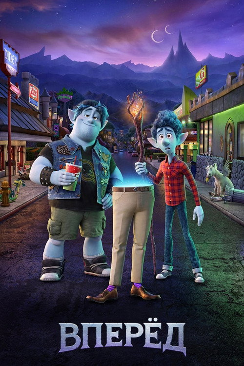
Вперёд
мультфильм, семейный, фэнтези, приключения, комедия
Режиссер: Дэн Скэнлон
В ролях: Том Холланд, Крис Прэтт, Джулия Луи-Дрейфус

Суперсемейка 2
боевик, приключения, мультфильм, семейный
Режиссер: Брэд Бёрд
В ролях: Крэйг Т. Нельсон, Холли Хантер, Sarah Vowell

Тачки
мультфильм, приключения, комедия, семейный
Режиссер: Джон Лассетер
В ролях: Оуэн Уилсон, Пол Ньюман, Бонни Хант

Хороший динозавр
приключения, мультфильм, семейный
Режиссер: Питер Сон
В ролях: Фрэнсис Макдорманд, Raymond Ochoa, Джеффри Райт

Головоломка
мультфильм, семейный, приключения, драма, комедия
Режиссер: Пит Доктер
В ролях: Эми Полер, Филлис Смит, Ричард Кайнд

В поисках Дори
приключения, мультфильм, семейный
Режиссер: Эндрю Стэнтон
В ролях: Альберт Брукс, Эллен Дедженерес, Эд О'Нилл

В поисках Немо
мультфильм, семейный, приключения
Режиссер: Эндрю Стэнтон
В ролях: Альберт Брукс, Эллен Дедженерес, Alexander Gould

Университет монстров
мультфильм, семейный
Режиссер: Дэн Скэнлон
В ролях: Билли Кристал, Джон Гудман, Стив Бушеми

Корпорация монстров
мультфильм, комедия, семейный
Режиссер: Пит Доктер
В ролях: Джон Гудман, Билли Кристал, Mary Gibbs

Суперсемейка
боевик, приключения, мультфильм, семейный
Режиссер: Брэд Бёрд
В ролях: Крэйг Т. Нельсон, Холли Хантер, Sarah Vowell

Приключения Флика
семейный, мультфильм, приключения, комедия
Режиссер: Джон Лассетер
В ролях: Dave Foley, Кевин Спейси, Джулия Луи-Дрейфус

Храбрая сердцем
мультфильм, семейный, фэнтези, приключения
Режиссер: Brenda Chapman
В ролях: Келли Макдональд, Эмма Томпсон, Билли Коннолли

Вверх
мультфильм, комедия, семейный, приключения
Режиссер: Пит Доктер
В ролях: Ed Asner, Кристофер Пламмер, Jordan Nagai

Рататуй
мультфильм, комедия, семейный, фэнтези
Режиссер: Брэд Бёрд
В ролях: Пэттон Освальд, Иэн Холм, Lou Romano

ВАЛЛ·И
мультфильм, семейный, фантастика
Режиссер: Эндрю Стэнтон
В ролях: Бен Бёртт, Elissa Knight, Джефф Гарлин

101 далматинец
приключения, мультфильм, комедия, семейный
Режиссер: Clyde Geronimi
В ролях: Род Тейлор, J. Pat O'Malley, Betty Lou Gerson

Алиса в стране чудес
мультфильм, семейный, фэнтези, приключения
Режиссер: Clyde Geronimi
В ролях: Kathryn Beaumont, Эд Винн, Ричард Хэйдн

Атлантида Затерянный мир
мультфильм, семейный, приключения, фантастика
Режиссер: Гари Труздейл
В ролях: Майкл Дж. Фокс, Кри Саммер, Джеймс Гарнер

Книга джунглей
семейный, мультфильм, приключения
Режиссер: Wolfgang Reitherman
В ролях: Bruce Reitherman, Phil Harris, Себастьян Кабот

Цыплёнок цыпа
мультфильм, семейный, комедия
Режиссер: Марк Диндал
В ролях: Зак Брафф, Garry Marshall, Дон Ноттс

Лило и Стич
мультфильм, семейный, комедия, фантастика
Режиссер: Крис Сандерс
В ролях: Дэйви Чейз, Крис Сандерс, Тиа Каррере

Мулан
мультфильм, семейный, приключения
Режиссер: Tony Bancroft
В ролях: Минг-На Вен, Эдди Мёрфи, Б.Д. Вонг

Красавица и Чудовище
мелодрама, семейный, мультфильм, фэнтези
Режиссер: Гари Труздейл
В ролях: Paige O'Hara, Robby Benson, Richard White

Питер Пэн
мультфильм, семейный, приключения, фэнтези
Режиссер: Clyde Geronimi
В ролях: Bobby Driscoll, Kathryn Beaumont, Hans Conried

Ральф
семейный, мультфильм, комедия, приключения
Режиссер: Рич Мур
В ролях: Джон Си Райли, Сара Сильверман, Джек Макбрайер

Тарзан
мультфильм, семейный, приключения
Режиссер: Крис Бак
В ролях: Тони Голдуин, Минни Драйвер, Гленн Клоуз

Меч в камне
мультфильм, семейный, фэнтези
Режиссер: Wolfgang Reitherman
В ролях: Себастьян Кабот, Karl Swenson, Junius Matthews

Спящая красавица
фэнтези, мультфильм, мелодрама, семейный
Режиссер: Clyde Geronimi
В ролях: Mary Costa, Bill Shirley, Eleanor Audley

Принцесса и лягушка
мультфильм, мелодрама, фэнтези, семейный
Режиссер: Рон Клементс
В ролях: Аника Нони Роуз, Bruno Campos, Джим Каммингс

Робин Гуд
мультфильм, семейный, приключения
Режиссер: Wolfgang Reitherman
В ролях: Brian Bedford, Phil Harris, Andy Devine

Рапунцель: Запутанная история
мультфильм, семейный, приключения
Режиссер: Байрон Ховард
В ролях: Mandy Moore, Закари Ливай, Donna Murphy

Ральф против Интернета
боевик, приключения, мультфильм, комедия, семейный, фантастика
Режиссер: Рич Мур
В ролях: Джон Си Райли, Сара Сильверман, Галь Гадот

Русалочка
мультфильм, семейный, фэнтези
Режиссер: Рон Клементс
В ролях: Jodi Benson, Samuel E. Wright, Pat Carroll

Король Лев
мультфильм, семейный, драма
Режиссер: Роджер Аллерс
В ролях: Мэттью Бродерик, Moira Kelly, Нэйтан Лейн

Тайна Коко
семейный, мультфильм, музыка, приключения
Режиссер: Lee Unkrich
В ролях: Anthony Gonzalez, Гаэль Гарсиа Берналь, Бенджамин Брэтт

Бумажный роман
мультфильм, семейный, мелодрама, комедия, фэнтези
Режиссер: Джон Карс
В ролях: Джон Карс, Кэри Уолгрен, Джефф Тарлей

Аладдин
мультфильм, семейный, приключения, фэнтези, мелодрама
Режиссер: Джон Маскер
В ролях: Скотт Уайнгер, Робин Уильямс, Линда Ларкин

Моана
приключения, комедия, семейный, мультфильм
Режиссер: Джон Маскер
В ролях: Аулии Кравалхо, Дуэйн 'Скала' Джонсон, Рэйчел Хаус

Город героев
приключения, семейный, мультфильм, боевик, комедия
Режиссер: Кристофер Уильямс
В ролях: Скотт Эдсит, Райан Поттер, Дэниел Хенни

Меню
мультфильм, комедия, драма, семейный
Режиссер: Patrick Osborne
В ролях: Стивен Апостолина, Кирк Бэйли, Бен Бледсо

Холодное сердце
мультфильм, семейный, приключения, фэнтези
Режиссер: Дженнифер Ли
В ролях: Идина Мензел, Кристен Белл, Джонатан Грофф

Леди и Бродяга
мультфильм, семейный, мелодрама, приключения, комедия
Режиссер: Clyde Geronimi
В ролях: Barbara Luddy, Larry Roberts, Peggy Lee

Покахонтас
приключения, мультфильм, семейный, мелодрама
Режиссер: Mike Gabriel
В ролях: Irene Bedard, Мел Гибсон, Дэвид Огден Стайерс

Геркулес
мультфильм, семейный, фэнтези, приключения, комедия, мелодрама
Режиссер: Рон Клементс
В ролях: Тейт Донован, Джош Китон, Роджер Барт

Горбун из Нотр Дама
драма, мультфильм, семейный
Режиссер: Гари Труздейл
В ролях: Том Халс, Деми Мур, Кевин Клайн

Золушка
семейный, фэнтези, мультфильм, мелодрама
Режиссер: Hamilton Luske
В ролях: Ilene Woods, Eleanor Audley, Verna Felton

Братец медвежонок
приключения, мультфильм, семейный
Режиссер: Aaron Blaise
В ролях: Хоакин Феникс, Jeremy Suarez, Jason Raize

Похождения императора
приключения, мультфильм, комедия, семейный, фэнтези
Режиссер: Марк Диндал
В ролях: Дэвид Спейд, Джон Гудман, Eartha Kitt

Вольт
мультфильм, семейный, приключения, комедия
Режиссер: Кристофер Уильямс
В ролях: Джон Траволта, Майли Сайрус, Susie Essman

Уоллес и Громит: Дело о Смертельной Выпечке
семейный, мультфильм, комедия, детектив, мелодрама
Режиссер: Ник Парк
В ролях: Питер Саллис, Сэлли Линдсэй, Melissa Collier
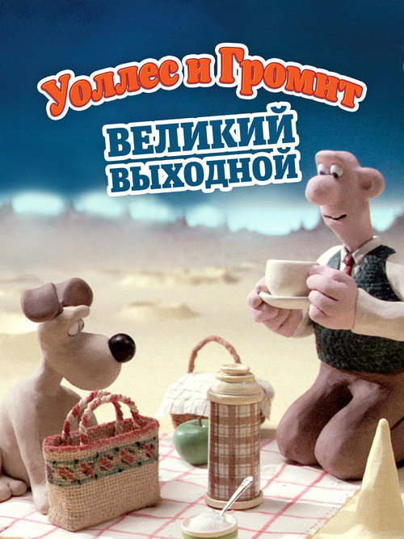
Уоллес и Громит: Великий Выходной
семейный, мультфильм, комедия, фантастика, приключения
Режиссер: Ник Парк
В ролях: Питер Саллис

Уоллес и Громит: Неправильные Штаны
мультфильм, комедия, семейный
Режиссер: Ник Парк
В ролях: Питер Саллис

Ведьмина служба доставки
мультфильм, семейный, фэнтези
Режиссер: Хаяо Миядзаки
В ролях: Минами Такаяма, Рэй Сакума, Каппэй Ямагути

Унесённые призраками
мультфильм, семейный, фэнтези
Режиссер: Хаяо Миядзаки
В ролях: Руми Хиираги, Мию Ирино, Мари Нацуки

Рыбка Поньо на утёсе
мультфильм, фэнтези, семейный
Режиссер: Хаяо Миядзаки
В ролях: Юрия Кодзуки, 土井洋輝, 所ジョージ

Небесный замок Лапута
приключения, фэнтези, мультфильм, боевик, семейный
Режиссер: Хаяо Миядзаки
В ролях: Кэйко Йокодзава, Маюми Танака, Минори Терада

Мой сосед Тоторо
фэнтези, мультфильм, семейный
Режиссер: Хаяо Миядзаки
В ролях: Норико Хидака, Тика Сакамото, Хитоши Такаги

Принцесса Мононоке
приключения, фэнтези, мультфильм
Режиссер: Хаяо Миядзаки
В ролях: Йодзи Мацуда, Юрико Исида, Юко Танака

Ходячий замок
фэнтези, мультфильм, приключения
Режиссер: Хаяо Миядзаки
В ролях: Тиэко Байсё, Такуя Кимура, Акихиро Мива

Тайна Келлс
мультфильм, семейный, фэнтези
Режиссер: Tomm Moore
В ролях: Evan McGuire, Christen Mooney, Брендан Глисон

Кунг-фу Панда
боевик, мультфильм, комедия, семейный
Режиссер: Марк Осборн
В ролях: Джек Блэк, Дастин Хоффман, Анджелина Джоли

Пес из Лас-Вегаса
мультфильм, комедия, семейный
Режиссер: James L. George
В ролях: Rodney Dangerfield, Susan Boyd, Ronnie Schell

Мегамозг
мультфильм, боевик, комедия, семейный, фантастика
Режиссер: Том МакГрат
В ролях: Уилл Феррелл, Брэд Питт, Тина Фей

Лесная братва
приключения, мультфильм, комедия, семейный
Режиссер: Кэри Киркпатрик
В ролях: Брюс Уиллис, Гарри Шендлинг, Стив Карелл

Гадкий я
мультфильм, комедия, криминал, семейный, фантастика
Режиссер: Пьер Коффен
В ролях: Стив Карелл, Джейсон Сигел, Миранда Косгроув

Зверопой
мультфильм, музыка, комедия, семейный
Режиссер: Garth Jennings
В ролях: Мэттью Макконахи, Риз Уизерспун, Сет МакФарлейн

Песнь моря
семейный, мультфильм, фэнтези
Режиссер: Tomm Moore
В ролях: David Rawle, Брендан Глисон, Lisa Hannigan

Как приручить дракона
фэнтези, приключения, мультфильм, семейный
Режиссер: Крис Сандерс
В ролях: Джей Барушель, Джерард Батлер, Крэйг Фергюсон

Хранители Снов
мультфильм, семейный, фэнтези, боевик, приключения
Режиссер: Питер Рэмси
В ролях: Крис Пайн, Алек Болдуин, Джуд Лоу

Кунг-фу Панда 3
мультфильм, боевик, приключения, комедия, семейный
Режиссер: Jennifer Yuh Nelson
В ролях: Джек Блэк, Брайан Крэнстон, Дастин Хоффман

Кто подставил кролика Роджера
фэнтези, мультфильм, комедия, криминал
Режиссер: Роберт Земекис
В ролях: Боб Хоскинс, Кристофер Ллойд, Джоанна Кэссиди

Тролли
семейный, мультфильм, фэнтези, приключения, комедия, музыка
Режиссер: Майк Митчелл
В ролях: Анна Кендрик, Джастин Тимберлейк, Зоуи Дешанель

Пираты! Банда неудачников
мультфильм, приключения, семейный, комедия
Режиссер: Peter Lord
В ролях: Хью Грант, Мартин Фримен, Имельда Стонтон

Монстр в Париже
приключения, мультфильм, комедия, семейный, фэнтези
Режиссер: Bibo Bergeron
В ролях: Vanessa Paradis, Matthieu Chedid, Gad Elmaleh

Семейка Крудс
мультфильм, приключения, семейный, комедия
Режиссер: Kirk DeMicco
В ролях: Николас Кейдж, Эмма Стоун, Райан Рейнольдс

Шрек
мультфильм, комедия, фэнтези, приключения, семейный
Режиссер: Эндрю Адамсон
В ролях: Майк Майерс, Эдди Мёрфи, Кэмерон Диас

Стальной гигант
мультфильм, драма, семейный, фантастика
Режиссер: Брэд Бёрд
В ролях: Дженнифер Энистон, Гарри Конник мл., Вин Дизель

Кунг-фу Панда 2
мультфильм, семейный, комедия, боевик
Режиссер: Jennifer Yuh Nelson
В ролях: Джек Блэк, Анджелина Джоли, Дастин Хоффман

Миньоны
семейный, мультфильм, приключения, комедия
Режиссер: Кайл Балда
В ролях: Сандра Буллок, Джон Хэмм, Майкл Китон

Мадагаскар
приключения, мультфильм, комедия, семейный
Режиссер: Эрик Дарнелл
В ролях: Бен Стиллер, Крис Рок, Дэвид Швиммер

Побег из курятника
мультфильм, комедия, семейный
Режиссер: Peter Lord
В ролях: Julia Sawalha, Мел Гибсон, Имельда Стонтон

Сумерки. Сага: Рассвет — Часть 2
фэнтези, драма, мелодрама
Режиссер: Билл Кондон
В ролях: Кристен Стюарт, Роберт Паттинсон, Тейлор Лотнер

Сумерки. Сага: Рассвет — Часть 1
приключения, фэнтези, мелодрама
Режиссер: Билл Кондон
В ролях: Кристен Стюарт, Роберт Паттинсон, Тейлор Лотнер

Голодные игры: Сойка-пересмешница. Часть 2
боевик, приключения, фантастика
Режиссер: Фрэнсис Лоуренс
В ролях: Дженнифер Лоуренс, Джош Хатчерсон, Лиам Хэмсворт

Голодные игры: Сойка-пересмешница. Часть 1
фантастика, приключения, триллер
Режиссер: Фрэнсис Лоуренс
В ролях: Дженнифер Лоуренс, Джош Хатчерсон, Лиам Хэмсворт

Голодные игры: И вспыхнет пламя
приключения, боевик, фантастика
Режиссер: Фрэнсис Лоуренс
В ролях: Дженнифер Лоуренс, Джош Хатчерсон, Лиам Хэмсворт

Сумерки. Сага: Новолуние
приключения, фэнтези, драма, мелодрама
Режиссер: Крис Вайц
В ролях: Кристен Стюарт, Роберт Паттинсон, Тейлор Лотнер

Сумерки. Сага: Затмение
приключения, фэнтези, драма, мелодрама
Режиссер: Дэвид Слейд
В ролях: Кристен Стюарт, Роберт Паттинсон, Тейлор Лотнер

Сумерки
фэнтези, драма, мелодрама
Режиссер: Кэтрин Хардвик
В ролях: Кристен Стюарт, Роберт Паттинсон, Билли Бёрк

Голодные игры
фантастика, приключения, боевик, триллер
Режиссер: Гэри Росс
В ролях: Дженнифер Лоуренс, Джош Хатчерсон, Лиам Хэмсворт

Деловая женщина
комедия, мелодрама, драма
Режиссер: Mike Nichols
В ролях: Мелани Гриффит, Харрисон Форд, Сигурни Уивер

P.S. Я люблю тебя
драма, мелодрама
Режиссер: Richard LaGravenese
В ролях: Хилари Суэнк, Джерард Батлер, Лиза Кудроу

Форрест Гамп
комедия, драма, мелодрама
Режиссер: Роберт Земекис
В ролях: Том Хэнкс, Робин Райт, Гэри Синиз

Париж, я люблю тебя
драма, мелодрама
Режиссер: Sylvain Chomet
В ролях: Стив Бушеми, Натали Портман, Уиллем Дефо

Комната в Риме
драма, мелодрама
Режиссер: Julio Medem
В ролях: Елена Анайя, Наташа Яровенко, Enrico Lo Verso
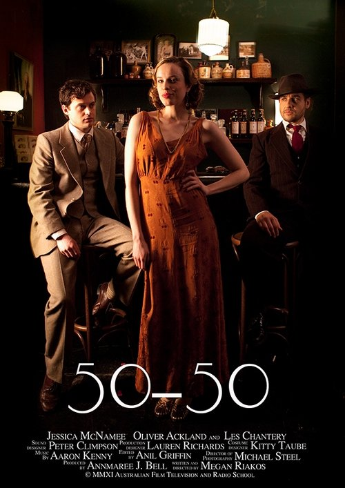
50-50
криминал, драма
Режиссер: Megan Riakos
В ролях: Джессика Макнэми, Oliver Ackland, Лес Чэнтери

Искупление
драма, мелодрама
Режиссер: Джо Райт
В ролях: Джеймс МакЭвой, Кира Найтли, Сирша Ронан

Вкус жизни
комедия, мелодрама, драма
Режиссер: Скотт Хикс
В ролях: Кэтрин Зета-Джонс, Аарон Екгарт, Эбигейл Бреслин

Ромео + Джульетта
драма, мелодрама
Режиссер: Баз Лурман
В ролях: Леонардо ДиКаприо, Клэр Дэйнс, Джесси Брэдфорд

Знакомьтесь, Джо Блэк
фэнтези, драма, мелодрама
Режиссер: Martin Brest
В ролях: Брэд Питт, Энтони Хопкинс, Клэр Форлани

Кейт и Лео
мелодрама, комедия, фэнтези
Режиссер: Джеймс Мэнголд
В ролях: Мег Райан, Хью Джекман, Лев Шрайбер

Отпуск по обмену
комедия, мелодрама
Режиссер: Нэнси Мейерс
В ролях: Кэмерон Диас, Кейт Уинслет, Джуд Лоу

Дневник памяти
мелодрама, драма
Режиссер: Nick Cassavetes
В ролях: Райан Гослинг, Рэйчел МакАдамс, Джина Роулендс

Любовь и другие лекарства
драма, комедия, мелодрама
Режиссер: Эдвард Цвик
В ролях: Джейк Джилленхол, Энн Хэтэуэй, Оливер Платт

Трудности перевода
драма, комедия, мелодрама
Режиссер: София Коппола
В ролях: Билл Мюррей, Скарлетт Йоханссон, Джованни Рибизи

Телохранитель
боевик, драма, мелодрама
Режиссер: Mick Jackson
В ролях: Кевин Костнер, Уитни Хьюстон, Гари Кемп

Тыковка
комедия, драма, мелодрама
Режиссер: Anthony Abrams
В ролях: Кристина Риччи, Hank Harris, Бренда Блетин

Джуно
комедия, драма, мелодрама
Режиссер: Джейсон Райтман
В ролях: Эллиот Пейдж, Майкл Сера, Дженнифер Гарнер

Джерри Магуайер
комедия, драма, мелодрама
Режиссер: Кэмерон Кроу
В ролях: Том Круз, Рене Зеллвегер, Кьюба Гудинг мл.

Роман с камнем
мелодрама, комедия, боевик, приключения
Режиссер: Роберт Земекис
В ролях: Майкл Дуглас, Кэтлин Тёрнер, Дэнни Де Вито

Потустороннее
драма, фэнтези
Режиссер: Клинт Иствуд
В ролях: Мэтт Деймон, Сесиль де Франс, Брайс Даллас Ховард

Когда Гарри встретил Салли
комедия, мелодрама, драма
Режиссер: Роб Райнер
В ролях: Билли Кристал, Мег Райан, Кэрри Фишер

Крупная рыба
приключения, фэнтези, драма
Режиссер: Тим Бёртон
В ролях: Юэн Макгрегор, Альберт Финни, Билли Крудап

Хористы
драма, комедия, музыка
Режиссер: Christophe Barratier
В ролях: Жерар Жюньо, François Berléand, Кад Мерад

Короче
драма, фантастика, комедия
Режиссер: Александр Пэйн
В ролях: Мэтт Деймон, Кристоф Вальц, Хонг Чау

Их собственная лига
комедия, драма
Режиссер: Penny Marshall
В ролях: Том Хэнкс, Джина Дэвис, Lori Petty

Титаник
драма, мелодрама
Режиссер: Джеймс Кэмерон
В ролях: Леонардо ДиКаприо, Кейт Уинслет, Билли Зейн

Прошлой ночью в Нью-Йорке
драма, мелодрама
Режиссер: Massy Tadjedin
В ролях: Кира Найтли, Сэм Уортингтон, Ева Мендес

Красотка
мелодрама, комедия
Режиссер: Garry Marshall
В ролях: Ричард Гир, Джулия Робертс, Ральф Беллами

Амели
комедия, мелодрама
Режиссер: Жан-Пьер Жёне
В ролях: Одри Тоту, Матьё Кассовиц, Рюфюс

Пятьдесят оттенков серого
драма, мелодрама, триллер
Режиссер: Sam Taylor-Johnson
В ролях: Дакота Джонсон, Джейми Дорнан, Дженнифер Эль

Суши girl
мелодрама, комедия, драма
Режиссер: Robert Allan Ackerman
В ролях: Бриттани Мёрфи, Tammy Blanchard, Gabriel Mann

Магия лунного света
комедия, драма, мелодрама
Режиссер: Вуди Аллен
В ролях: Колин Ферт, Эмма Стоун, Хэмиш Линклейтер
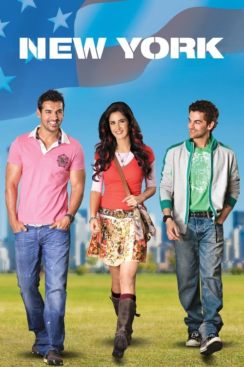
Нью-Йорк
криминал, драма, триллер
Режиссер: Kabir Khan
В ролях: Джон Абрахам, Neil Nitin Mukesh, Katrina Kaif

Иллюзионист
фэнтези, драма, триллер, мелодрама
Режиссер: Нил Бёргер
В ролях: Эдвард Нортон, Пол Джаматти, Джессика Бил

Разрисованная вуаль
мелодрама, драма
Режиссер: Джон Кёрран
В ролях: Эдвард Нортон, Наоми Уоттс, Лев Шрайбер

Одержимость
драма, детектив, мелодрама, триллер
Режиссер: Пол Макгиган
В ролях: Джош Хартнетт, Роуз Бирн, Мэттью Лиллард

Сонная лощина
фэнтези, триллер, детектив, ужасы
Режиссер: Тим Бёртон
В ролях: Джонни Депп, Кристина Риччи, Миранда Ричардсон

Фонтан
драма, приключения, фантастика, мелодрама
Режиссер: Даррен Аронофски
В ролях: Хью Джекман, Рэйчел Вайс, Эллен Бёрстин

Перл Харбор
военный, мелодрама, история, боевик
Режиссер: Майкл Бэй
В ролях: Бен Аффлек, Кейт Бекинсейл, Джош Хартнетт

Мне бы в небо
драма, мелодрама
Режиссер: Джейсон Райтман
В ролях: Джордж Клуни, Вера Фармига, Анна Кендрик

Хичкок
драма
Режиссер: Sacha Gervasi
В ролях: Энтони Хопкинс, Хелен Миррен, Скарлетт Йоханссон

Вернись ко Мне
мелодрама, комедия
Режиссер: Бонни Хант
В ролях: Дэвид Духовны, Минни Драйвер, Кэрролл О’Коннор

Любовник
драма, мелодрама
Режиссер: Jean-Jacques Annaud
В ролях: Jane March, Тони Люн Ка-Фай, Frédérique Meininger

Король говорит!
драма, история
Режиссер: Tom Hooper
В ролях: Колин Ферт, Джеффри Раш, Хелена Бонем Картер

Мечтатели
драма, мелодрама
Режиссер: Bernardo Bertolucci
В ролях: Майкл Питт, Ева Грин, Луї Ґаррель

Вам письмо
комедия, мелодрама
Режиссер: Nora Ephron
В ролях: Мег Райан, Том Хэнкс, Грег Киннир

Австралия
приключения, мелодрама, драма
Режиссер: Баз Лурман
В ролях: Николь Кидман, Хью Джекман, Эсси Дэвис

Любовь с препятствиями
комедия, мелодрама
Режиссер: James Huth
В ролях: Gad Elmaleh, Софи Марсо, Maurice Barthélemy

Непристойное предложение
мелодрама, драма
Режиссер: Adrian Lyne
В ролях: Роберт Редфорд, Деми Мур, Вуди Харрельсон

Турист
боевик, триллер, мелодрама
Режиссер: Флориан Хенкель фон Доннерсмарк
В ролях: Джонни Депп, Анджелина Джоли, Пол Беттани

Унесённые ветром
драма, военный, мелодрама
Режиссер: Виктор Флеминг
В ролях: Вивьен Ли, Кларк Гейбл, Оливия де Хэвилленд

Невидимая сторона
драма
Режиссер: Джон Ли Хэнкок
В ролях: Сандра Буллок, Тим Макгроу, Quinton Aaron

Одиннадцать друзей Оушена
триллер, криминал
Режиссер: Steven Soderbergh
В ролях: Джордж Клуни, Брэд Питт, Энди Гарсиа

Двенадцать друзей Оушена
триллер, криминал
Режиссер: Steven Soderbergh
В ролях: Джордж Клуни, Джулия Робертс, Брэд Питт

Тринадцать друзей Оушена
криминал, триллер
Режиссер: Steven Soderbergh
В ролях: Джордж Клуни, Брэд Питт, Аль Пачино

Афера по-американски
драма, криминал
Режиссер: David O. Russell
В ролях: Кристиан Бейл, Брэдли Купер, Эми Адамс

Карты, деньги, два ствола
комедия, криминал
Режиссер: Гай Ричи
В ролях: Винни Джонс, Джейсон Флеминг, Декстер Флетчер

Счастливое число Слевина
драма, триллер, криминал, детектив
Режиссер: Пол Макгиган
В ролях: Джош Хартнетт, Морган Фримен, Бен Кингсли

Реальные парни
триллер, комедия, боевик, криминал
Режиссер: Фишер Стивенс
В ролях: Аль Пачино, Кристофер Уокен, Алан Аркин

Чёрная орхидея
криминал, триллер, драма
Режиссер: Брайан Де Пальма
В ролях: Джош Хартнетт, Скарлетт Йоханссон, Аарон Екгарт

Ограбление по-итальянски
боевик, криминал
Режиссер: Ф. Гэри Грей
В ролях: Марк Уолберг, Шарлиз Терон, Эдвард Нортон

Секреты Лос-Анджелеса
криминал, детектив, триллер
Режиссер: Curtis Hanson
В ролях: Кевин Спейси, Рассел Кроу, Гай Пирс

Поединок
комедия, драма, триллер
Режиссер: Mars Callahan
В ролях: Mars Callahan, Чазз Пальминтери, Кристофер Уокен

Фокус
мелодрама, комедия, криминал
Режиссер: Джон Рекуа
В ролях: Уилл Смит, Марго Робби, Адриан Мартинес

На грани
боевик, триллер, криминал
Режиссер: Asger Leth
В ролях: Сэм Уортингтон, Элизабет Бэнкс, Джейми Белл

Не пойман — не вор
криминал, драма, триллер
Режиссер: Спайк Ли
В ролях: Дензел Вашингтон, Клайв Оуэн, Джоди Фостер

Револьвер
драма, триллер, криминал, детектив
Режиссер: Гай Ричи
В ролях: Джейсон Стейтем, Рэй Лиотта, Винсент Пасторе

Роковая женщина
детектив, криминал, триллер
Режиссер: Брайан Де Пальма
В ролях: Ребекка Ромейн, Антонио Бандерас, Питер Койот

Липучка
детектив, комедия, криминал
Режиссер: Роб Минкофф
В ролях: Патрик Демпси, Эшли Джадд, Тим Блейк Нельсон

Криминальная фишка от Генри
криминал, комедия
Режиссер: Малькольм Венвилль
В ролях: Киану Ривз, Вера Фармига, Джеймс Каан

Угнать за 60 секунд
боевик, криминал, триллер
Режиссер: Dominic Sena
В ролях: Николас Кейдж, Анджелина Джоли, Джованни Рибизи

Большой куш
криминал, комедия
Режиссер: Гай Ричи
В ролях: Джейсон Стейтем, Алан Форд, Стивен Грэм

Рок-н-рольщик
боевик, криминал, триллер
Режиссер: Гай Ричи
В ролях: Джерард Батлер, Том Уилкинсон, Тэнди Ньютон
Gentlemen Of The World
Режиссер: Неизвестно
В ролях:

Криминальное чтиво
триллер, криминал, комедия
Режиссер: Квентин Тарантино
В ролях: Джон Траволта, Сэмюэл Л. Джексон, Ума Турман

Люди Икс: Первый класс
боевик, фантастика, приключения
Режиссер: Мэттью Вон
В ролях: Джеймс МакЭвой, Майкл Фассбендер, Дженнифер Лоуренс

Люди Икс 2
приключения, боевик, фантастика
Режиссер: Брайан Сингер
В ролях: Хью Джекман, Патрик Стюарт, Джеймс Марсден

Люди Икс: Дни минувшего будущего
боевик, приключения, фантастика
Режиссер: Брайан Сингер
В ролях: Хью Джекман, Джеймс МакЭвой, Майкл Фассбендер

Новый Человек-паук: Высокое напряжение
боевик, приключения, фантастика
Режиссер: Марк Уэбб
В ролях: Эндрю Гарфилд, Эмма Стоун, Джейми Фокс

Человек-паук 3: Враг в отражении
боевик, приключения, фантастика
Режиссер: Сэм Рэйми
В ролях: Тоби Магуайр, Кирстен Данст, Джеймс Франко

Человек-паук 2
боевик, приключения, фантастика
Режиссер: Сэм Рэйми
В ролях: Тоби Магуайр, Кирстен Данст, Джеймс Франко

Новый Человек-паук
боевик, приключения, фантастика
Режиссер: Марк Уэбб
В ролях: Эндрю Гарфилд, Эмма Стоун, Рис Иванс

Человек-паук
боевик, фантастика
Режиссер: Сэм Рэйми
В ролях: Тоби Магуайр, Уиллем Дефо, Кирстен Данст

Дэдпул 2
боевик, комедия, приключения
Режиссер: Дэвид Литч
В ролях: Райан Рейнольдс, Джош Бролин, Морена Баккарин

Дэдпул
боевик, приключения, комедия
Режиссер: Тим Миллер
В ролях: Райан Рейнольдс, Морена Баккарин, Эд Скрейн

Логан
боевик, драма, фантастика
Режиссер: Джеймс Мэнголд
В ролях: Хью Джекман, Дафни Кин, Патрик Стюарт

Люди Икс: Апокалипсис
фантастика, фэнтези, боевик
Режиссер: Брайан Сингер
В ролях: Джеймс МакЭвой, Майкл Фассбендер, Дженнифер Лоуренс

Росомаха: Бессмертный
боевик, фантастика, приключения
Режиссер: Джеймс Мэнголд
В ролях: Хью Джекман, Хироюки Санада, Тао Окамото

Люди Икс: Начало. Росомаха
приключения, боевик, фантастика
Режиссер: Гэвин Худ
В ролях: Хью Джекман, Лев Шрайбер, Дэнни Хьюстон

Люди Икс: Последняя битва
приключения, боевик, фантастика, триллер
Режиссер: Бретт Ратнер
В ролях: Хью Джекман, Хэлли Берри, Иэн МакКеллен
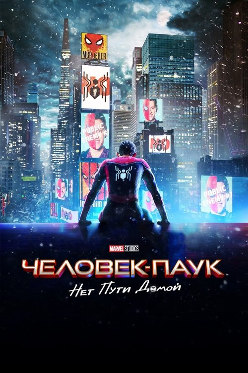
Человек-паук: Нет пути домой
боевик, приключения, фантастика
Режиссер: Джон Уоттс
В ролях: Том Холланд, Зендея, Бенедикт Камбербэтч

Мстители: Финал
приключения, фантастика, боевик
Режиссер: Энтони Руссо
В ролях: Роберт Дауни мл., Крис Эванс, Марк Руффало

Невероятный Халк
фантастика, боевик, приключения
Режиссер: Луи Летерье
В ролях: Эдвард Нортон, Лив Тайлер, Тим Рот

Железный человек
боевик, фантастика, приключения
Режиссер: Джон Фавро
В ролях: Роберт Дауни мл., Терренс Ховард, Джефф Бриджес

Человек-паук: Вдали от дома
боевик, приключения, фантастика
Режиссер: Джон Уоттс
В ролях: Том Холланд, Джейк Джилленхол, Сэмюэл Л. Джексон

Веном
фантастика, боевик
Режиссер: Рубен Фляйшер
В ролях: Том Харди, Мишель Уильямс, Риз Ахмед

Мстители: Война бесконечности
приключения, боевик, фантастика
Режиссер: Энтони Руссо
В ролях: Роберт Дауни мл., Крис Эванс, Крис Хемсворт

Чёрная Пантера
боевик, приключения, фантастика
Режиссер: Райан Куглер
В ролях: Чедвик Боузман, Майкл Б. Джордан, Лупита Нионго

Тор: Рагнарёк
боевик, фантастика, комедия
Режиссер: Тайка Вайтити
В ролях: Крис Хемсворт, Марк Руффало, Том Хиддлстон

Человек-паук: Возвращение домой
боевик, приключения, фантастика
Режиссер: Джон Уоттс
В ролях: Том Холланд, Майкл Китон, Роберт Дауни мл.

Стражи Галактики. Часть 2
фантастика, приключения, боевик
Режиссер: Джеймс Ганн
В ролях: Крис Прэтт, Зои Салдана, Дейв Батиста

Доктор Стрэндж
фэнтези, приключения, боевик
Режиссер: Скотт Дерриксон
В ролях: Бенедикт Камбербэтч, Чиветел Эджиофор, Рэйчел МакАдамс

Человек-муравей
фантастика, приключения, боевик
Режиссер: Пейтон Рид
В ролях: Пол Радд, Майкл Дуглас, Эванджелин Лилли

Стражи Галактики
боевик, фантастика, приключения
Режиссер: Джеймс Ганн
В ролях: Крис Прэтт, Зои Салдана, Дейв Батиста
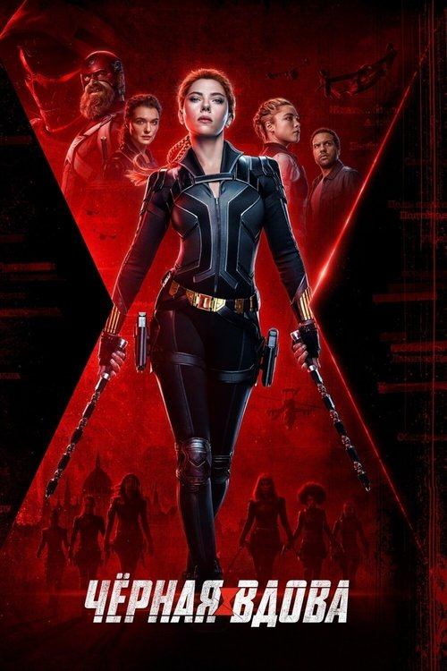
Чёрная вдова
боевик, приключения, фантастика
Режиссер: Кейт Шортланд
В ролях: Скарлетт Йоханссон, Флоренс Пью, Рэйчел Вайс

Капитан Марвел
боевик, приключения, фантастика
Режиссер: Райан Флек
В ролях: Бри Ларсон, Сэмюэл Л. Джексон, Бен Мендельсон

Человек-муравей и Оса
боевик, приключения, фантастика
Режиссер: Пейтон Рид
В ролях: Пол Радд, Эванджелин Лилли, Майкл Дуглас

Тор 2: Царство тьмы
боевик, приключения, фэнтези
Режиссер: Алан Тейлор
В ролях: Крис Хемсворт, Натали Портман, Том Хиддлстон

Железный человек 3
боевик, приключения, фантастика
Режиссер: Шейн Блэк
В ролях: Роберт Дауни мл., Гвинет Пэлтроу, Дон Чидл

Мстители
фантастика, боевик, приключения
Режиссер: Джосс Уидон
В ролях: Роберт Дауни мл., Крис Эванс, Марк Руффало

Первый мститель
боевик, приключения, фантастика
Режиссер: Джо Джонстон
В ролях: Крис Эванс, Хейли Этвелл, Себастиан Стэн

Тор
приключения, фэнтези, боевик
Режиссер: Кеннет Брана
В ролях: Крис Хемсворт, Натали Портман, Том Хиддлстон

Железный человек 2
приключения, боевик, фантастика
Режиссер: Джон Фавро
В ролях: Роберт Дауни мл., Гвинет Пэлтроу, Дон Чидл

Тёмный рыцарь: Возрождение легенды
боевик, криминал, драма, триллер
Режиссер: Кристофер Нолан
В ролях: Кристиан Бейл, Гэри Олдман, Том Харди

Тёмный рыцарь
боевик, криминал, триллер
Режиссер: Кристофер Нолан
В ролях: Кристиан Бейл, Хит Леджер, Аарон Екгарт

Бэтмен: Начало
драма, криминал, боевик
Режиссер: Кристофер Нолан
В ролях: Кристиан Бейл, Майкл Кейн, Лиам Нисон

Бэтмен и Робин
боевик, фантастика, приключения
Режиссер: Джоэл Шумахер
В ролях: Джордж Клуни, Крис О’Доннелл, Арнольд Шварценеггер

Бэтмен навсегда
боевик, криминал, фэнтези
Режиссер: Джоэл Шумахер
В ролях: Вэл Килмер, Томми Ли Джонс, Джим Керри

Бэтмен возвращается
боевик, фэнтези
Режиссер: Тим Бёртон
В ролях: Майкл Китон, Дэнни Де Вито, Мишель Пфайффер

Бэтмен
фэнтези, боевик, криминал
Режиссер: Тим Бёртон
В ролях: Майкл Китон, Джек Николсон, Ким Бейсингер

Пипец 2
боевик, приключения, криминал
Режиссер: Джефф Уодлоу
В ролях: Аарон Тейлор-Джонсон, Хлоя Грейс Морец, Кристофер Минц-Плассе

Блэйд
ужасы, боевик
Режиссер: Стивен Норрингтон
В ролях: Уэсли Снайпс, Стивен Дорфф, Крис Кристофферсон

Хеллбой II: Золотая армия
фэнтези, боевик
Режиссер: Гильермо дель Торо
В ролях: Рон Перлман, Сэльма Блэр, Даг Джонс

Пипец
боевик, криминал
Режиссер: Мэттью Вон
В ролях: Аарон Тейлор-Джонсон, Хлоя Грейс Морец, Николас Кейдж

Особо опасен
боевик, триллер, криминал
Режиссер: Тимур Бекмамбетов
В ролях: Джеймс МакЭвой, Анджелина Джоли, Морган Фримен

Город грехов
криминал, триллер
Режиссер: Роберт Родригес
В ролях: Брюс Уиллис, Джессика Альба, Клайв Оуэн

Хэнкок
фэнтези, боевик
Режиссер: Питер Берг
В ролях: Уилл Смит, Шарлиз Терон, Джейсон Бейтман

Халк
фантастика, приключения, боевик
Режиссер: 李安
В ролях: Эрик Бана, Дженнифер Коннелли, Сэм Эллиотт
Home Movies 300-1
Режиссер: Jim Campbell
В ролях:

Блэйд 2
фэнтези, ужасы, боевик, триллер
Режиссер: Гильермо дель Торо
В ролях: Уэсли Снайпс, Крис Кристофферсон, Рон Перлман

Джон Картер
боевик, приключения, фантастика
Режиссер: Эндрю Стэнтон
В ролях: Тейлор Китч, Линн Коллинз, Саманта Мортон

Константин: Повелитель тьмы
фэнтези, боевик, ужасы
Режиссер: Фрэнсис Лоуренс
В ролях: Киану Ривз, Рэйчел Вайс, Шайа ЛаБаф

Тень
фэнтези, боевик, криминал
Режиссер: Рассел Малкэхи
В ролях: Алек Болдуин, John Lone, Пенелопа Энн Миллер

Kingsman: Секретная служба
криминал, комедия, боевик, приключения
Режиссер: Мэттью Вон
В ролях: Тэрон Эджертон, Колин Ферт, Сэмюэл Л. Джексон

Хранители
детектив, боевик, фантастика
Режиссер: Зак Снайдер
В ролях: Малин Акерман, Патрик Уилсон, Билли Крудап

Хеллбой: Герой из пекла
фэнтези, боевик
Режиссер: Гильермо дель Торо
В ролях: Рон Перлман, Сэльма Блэр, Даг Джонс

Американский пирог: Все в сборе
комедия
Режиссер: Джон Харвитц
В ролях: Джейсон Биггс, Элисон Ханниган, Шонн Уильям Скотт

Американский пирог 3: Свадьба
комедия, мелодрама
Режиссер: Jesse Dylan
В ролях: Джейсон Биггс, Шонн Уильям Скотт, Элисон Ханниган

Американский пирог 2
комедия, мелодрама
Режиссер: J.B. Rogers
В ролях: Джейсон Биггс, Томас Иэн Николас, Крис Клейн

Американский пирог
комедия, мелодрама
Режиссер: Пол Вайц
В ролях: Джейсон Биггс, Крис Клейн, Томас Иэн Николас

Джентльмены предпочитают блондинок
комедия, мелодрама
Режиссер: Говард Хоукс
В ролях: Джейн Расселл, Мэрилин Монро, Charles Coburn

Неотразимая Тамара
комедия, мелодрама
Режиссер: Stephen Frears
В ролях: Джемма Артертон, Роджер Аллам, Билл Кэмп

Отличница легкого поведения
комедия
Режиссер: Уилл Глак
В ролях: Эмма Стоун, Пенн Бэджли, Аманда Байнс

Правдивая ложь
боевик, триллер
Режиссер: Джеймс Кэмерон
В ролях: Арнольд Шварценеггер, Джейми Ли Кёртис, Том Арнольд

Безжалостные люди
комедия
Режиссер: Джим Абрахамс
В ролях: Дэнни Де Вито, Бетт Мидлер, Джадж Райнхолд

Мы — Миллеры
комедия, криминал
Режиссер: Роусон Маршалл Тёрбер
В ролях: Дженнифер Энистон, Джейсон Судейкис, Эмма Робертс

Двое: Я и моя тень
комедия, семейный, мелодрама
Режиссер: Энди Теннант
В ролях: Элли Кёрсти, Steve Guttenberg, Эшли Олсен

Большой Лебовски
комедия, криминал
Режиссер: Джоэл Коэн
В ролях: Джефф Бриджес, Джон Гудман, Джулианна Мур

Любовь по рецепту и без
драма, комедия
Режиссер: Geoff Moore
В ролях: Сэм Рокуэлл, Мишель Монахэн, Оливия Уайлд

Свидание вслепую
комедия, мелодрама
Режиссер: Blake Edwards
В ролях: Ким Бейсингер, Брюс Уиллис, Джон Ларрокетт

Другая женщина
комедия, мелодрама
Режиссер: Nick Cassavetes
В ролях: Кэмерон Диас, Лесли Манн, Кейт Аптон

Как украсть миллион
комедия, криминал, мелодрама
Режиссер: Уильям Уайлер
В ролях: Одри Хепбёрн, Питер О'Тул, Елай Воллак

В пролёте
комедия, мелодрама, драма
Режиссер: Николас Столлер
В ролях: Джейсон Сигел, Кристен Белл, Мила Кунис

Быстрее, чем кролики
комедия
Режиссер: Дмитрий Дьяченко
В ролях: Леонид Барац, Ростислав Хаит, Александр Демидов

Всегда говори «ДА»
комедия, мелодрама
Режиссер: Пейтон Рид
В ролях: Джим Керри, Зоуи Дешанель, Брэдли Купер

Последний киногерой
приключения, фэнтези, боевик, комедия, семейный
Режиссер: Джон МакТирнан
В ролях: Арнольд Шварценеггер, Austin O'Brien, Бриджетт Уилсон

Милашка
мелодрама, комедия
Режиссер: Roger Kumble
В ролях: Кэмерон Диас, Кристина Эпплгейт, Сэльма Блэр

Ларри Краун
комедия, мелодрама, драма
Режиссер: Том Хэнкс
В ролях: Том Хэнкс, Джулия Робертс, Брайан Крэнстон

Обещать - не значит жениться
комедия, мелодрама, драма
Режиссер: Кен Куопис
В ролях: Джиннифер Гудвин, Джастин Лонг, Дженнифер Энистон

Бесшабашное ограбление
комедия, криминал, боевик
Режиссер: Drew Daywalt
В ролях: Шонн Уильям Скотт, Тимм Шарп, Patrick Been

Все без ума от Мэри
мелодрама, комедия
Режиссер: Peter Farrelly
В ролях: Кэмерон Диас, Matt Dillon, Бен Стиллер

Невыносимая жестокость
комедия, мелодрама, криминал
Режиссер: Джоэл Коэн
В ролях: Джордж Клуни, Кэтрин Зета-Джонс, Джеффри Раш

Замерзшая из Майами
комедия, мелодрама
Режиссер: Jonas Elmer
В ролях: Рене Зеллвегер, Гарри Конник мл., Джей Кей Симмонс

Секс по дружбе
мелодрама, комедия
Режиссер: Уилл Глак
В ролях: Джастин Тимберлейк, Мила Кунис, Дженна Эльфман

Сохраняя веру
комедия, мелодрама
Режиссер: Эдвард Нортон
В ролях: Бен Стиллер, Эдвард Нортон, Дженна Эльфман

Любовь нельзя купить
комедия, мелодрама
Режиссер: Steve Rash
В ролях: Патрик Демпси, Amanda Peterson, Кортни Гейнс

Мужской стриптиз
комедия
Режиссер: Peter Cattaneo
В ролях: Роберт Карлайл, Марк Эдди, Wim Snape

Доктор Голливуд
комедия, мелодрама
Режиссер: Michael Caton-Jones
В ролях: Майкл Дж. Фокс, Julie Warner, Барнард Хьюз

Рыцарь дня
боевик, комедия
Режиссер: Джеймс Мэнголд
В ролях: Том Круз, Кэмерон Диас, Питер Сарсгаард

Зуд седьмого года
комедия, мелодрама
Режиссер: Billy Wilder
В ролях: Мэрилин Монро, Том Юэлл, Эвелин Кейс

Замуж на 2 дня
комедия, мелодрама
Режиссер: Pascal Chaumeil
В ролях: Диана Крюгер, Дэни Бун, Алис Поль

Стажёр
комедия
Режиссер: Нэнси Мейерс
В ролях: Роберт Де Ниро, Энн Хэтэуэй, Рене Руссо

Терминал
комедия, драма
Режиссер: Стивен Спилберг
В ролях: Том Хэнкс, Кэтрин Зета-Джонс, Стэнли Туччи

Шары ярости
комедия, криминал
Режиссер: Robert Ben Garant
В ролях: Дэн Фоглер, Кристофер Уокен, Джордж Лопес

Женщина в красном
комедия, мелодрама
Режиссер: Джин Уайлдер
В ролях: Джин Уайлдер, Чарльз Гродин, Joseph Bologna

Догма
фэнтези, комедия, приключения
Режиссер: Кевин Смит
В ролях: Бен Аффлек, Мэтт Деймон, Линда Фиорентино

Мартовские коты
комедия, мелодрама
Режиссер: Gregory Poirier
В ролях: Джерри О'Коннелл, Шеннон Элизабет, Джейк Бьюзи

Кудряшка Сью
комедия, драма, семейный, мелодрама
Режиссер: John Hughes
В ролях: Джеймс Белуши, Элисон Портер, Келли Линч

100 девчонок и одна в лифте
комедия, драма, мелодрама
Режиссер: Michael Davis
В ролях: Джонатан Такер, Эммануэль Шрики, James DeBello

Пол: Секретный материальчик
приключения, комедия, фантастика
Режиссер: Грег Моттола
В ролях: Саймон Пегг, Ник Фрост, Сет Роген

27 свадеб
комедия, мелодрама
Режиссер: Anne Fletcher
В ролях: Кэтрин Хайгл, Джеймс Марсден, Малин Акерман

В джазе только девушки
комедия, мелодрама, криминал
Режиссер: Billy Wilder
В ролях: Тони Кёртис, Джек Леммон, Мэрилин Монро

Сколько у тебя?
комедия, мелодрама
Режиссер: Марк Милод
В ролях: Анна Фэрис, Крис Эванс, Эри Грейнор

Такси
боевик, комедия, криминал, приключения
Режиссер: Gérard Pirès
В ролях: Сами Насери, Фредерик Дифенталь, Марион Котийяр
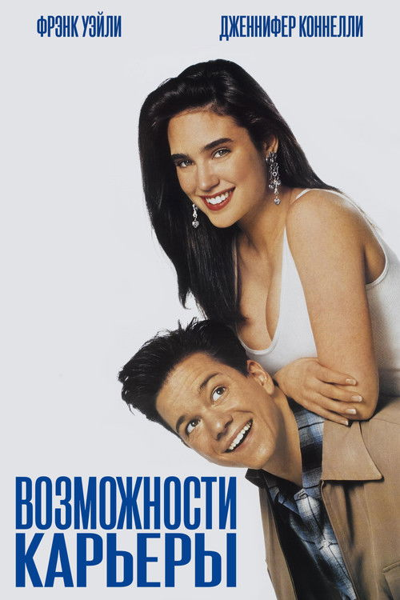
Возможности карьеры
мелодрама, комедия
Режиссер: Брайан Гордон
В ролях: Фрэнк Уэйли, Дженнифер Коннелли, Дермот Малруни

Маска
комедия, фэнтези, криминал, мелодрама
Режиссер: Чак Рассел
В ролях: Джим Керри, Питер Ригерт, Питер Грин

Толстяк на ринге
комедия, боевик, драма
Режиссер: Frank Coraci
В ролях: Кевин Джеймс, Сальма Хайек, Генри Уинклер

Взрыв из прошлого
драма, мелодрама, комедия
Режиссер: Хью Уилсон
В ролях: Брендан Фрейзер, Алисия Сильверстоун, Кристофер Уокен

Пока не сыграл в ящик
драма, комедия
Режиссер: Роб Райнер
В ролях: Джек Николсон, Морган Фримен, Шон Хейс

Боги, наверное, сошли с ума 2
боевик, комедия
Режиссер: Джейми Юйс
В ролях: Н!ксау, Лена Фаругия, Ханс Стридом

Мой кузен Винни
комедия, драма
Режиссер: Jonathan Lynn
В ролях: Джо Пеши, Мариса Томей, Ральф Маччио

Её алиби
комедия, криминал
Режиссер: Брюс Бересфорд
В ролях: Том Селлек, Паулина Поризкова, Уильям Дэниелс

Девять ярдов
комедия, криминал
Режиссер: Jonathan Lynn
В ролях: Мэттью Перри, Брюс Уиллис, Наташа Хенстридж

Привычка жениться
комедия, мелодрама, музыка
Режиссер: Jerry Rees
В ролях: Ким Бейсингер, Алек Болдуин, Роберт Лоджиа

Шестнадцать свечей
комедия, мелодрама
Режиссер: John Hughes
В ролях: Molly Ringwald, Michael Schoeffling, Хэвиленд Моррис

Гремлины
фэнтези, ужасы, комедия
Режиссер: Джо Данте
В ролях: Зак Гэллиган, Фиби Кейтс, Хойт Экстон

Ох уж эта наука!
комедия, фэнтези, фантастика, мелодрама
Режиссер: John Hughes
В ролях: Энтони Майкл Холл, Ilan Mitchell-Smith, Келли ЛеБрок

Сердцеедки
комедия, мелодрама, криминал
Режиссер: Дэвид Миркин
В ролях: Сигурни Уивер, Дженнифер Лав Хьюитт, Джейсон Ли

Идеальный голос 2
комедия, музыка
Режиссер: Элизабет Бэнкс
В ролях: Анна Кендрик, Бриттани Сноу, Хейли Стайнфелд

Спросите Синди
комедия, мелодрама
Режиссер: Steve Rash
В ролях: Чарли Шин, Angie Harmon, Дениз Ричардс

Напряги извилины
боевик, комедия, триллер
Режиссер: Питер Сигал
В ролях: Стив Карелл, Энн Хэтэуэй, Дуэйн 'Скала' Джонсон

Сабрина
комедия, мелодрама, драма
Режиссер: Billy Wilder
В ролях: Хамфри Богарт, Одри Хепбёрн, Уильям Холден

Папе снова 17
комедия, фэнтези, драма, мелодрама
Режиссер: Бёрр Стирс
В ролях: Зак Эфрон, Лесли Манн, Томас Леннон

Доброе утро
драма, комедия, мелодрама
Режиссер: Roger Michell
В ролях: Рэйчел МакАдамс, Харрисон Форд, Дайан Китон

Костолом
комедия, драма
Режиссер: Barry Skolnick
В ролях: Винни Джонс, Дэвид Келли, Дэвид Хеммингс

Реальная любовь
комедия, мелодрама, драма
Режиссер: Ричард Кёртис
В ролях: Хью Грант, Алан Рикман, Эмма Томпсон

Эта дурацкая любовь
комедия, драма, мелодрама
Режиссер: Гленн Фикарра
В ролях: Стив Карелл, Райан Гослинг, Джулианна Мур

Майор Пэйн
приключения, комедия, семейный
Режиссер: Ник Кастл
В ролях: Дэймон Уэйанс, Karyn Parsons, William Hickey

Король вечеринок
комедия, мелодрама
Режиссер: Walt Becker
В ролях: Райан Рейнольдс, Тара Рид, Тим Мэтисон

Детка
комедия, драма, мелодрама
Режиссер: Lynn Shelton
В ролях: Кира Найтли, Хлоя Грейс Морец, Сэм Рокуэлл

Шопоголик
комедия, мелодрама
Режиссер: P.J. Hogan
В ролях: Айла Фишер, Hugh Dancy, Кристен Риттер

Соседка
комедия, мелодрама
Режиссер: Люк Гринфилд
В ролях: Эмиль Хирш, Элиша Катберт, Тимоти Олифант

Славные парни
комедия, криминал, боевик
Режиссер: Шейн Блэк
В ролях: Рассел Кроу, Райан Гослинг, Энгаури Райс

Интуиция
комедия, мелодрама
Режиссер: Peter Chelsom
В ролях: Джон Кьюсак, Кейт Бекинсейл, Джереми Пивен

Люблю твою жену
мелодрама, комедия
Режиссер: Jeremiah S. Chechik
В ролях: Ryan Kwanten, Кэтрин О’Хара, Уилл Сассо

Исповедь невидимки
фантастика, комедия, мелодрама, триллер
Режиссер: Джон Карпентер
В ролях: Чеви Чейз, Дэрил Ханна, Сэм Нилл

1+1
драма, комедия
Режиссер: Éric Toledano
В ролях: Франсуа Клюзе, Омар Си, Анн Ле Ни

Консьерж
комедия, мелодрама
Режиссер: Барри Зонненфельд
В ролях: Майкл Дж. Фокс, Габриель Анвар, Энтони Хиггинс

Команда «А»
боевик, комедия, криминал
Режиссер: Джо Карнахан
В ролях: Лиам Нисон, Брэдли Купер, Джессика Бил

Корсиканец
комедия
Режиссер: Alain Berbérian
В ролях: Кристиан Клавье, Жан Рено, Катерина Мурино

Идеальный голос
комедия, музыка, мелодрама
Режиссер: Jason Moore
В ролях: Анна Кендрик, Анна Кэмп, Бриттани Сноу

РЭД 2
боевик, комедия, криминал, триллер
Режиссер: Dean Parisot
В ролях: Брюс Уиллис, Джон Малкович, Мэри-Луиз Паркер

Хороший год
комедия, драма, мелодрама
Режиссер: Ридли Скотт
В ролях: Рассел Кроу, Альберт Финни, Марион Котийяр

Опасный бизнес
комедия, боевик, криминал
Режиссер: Нэш Эдгертон
В ролях: Дэвид Ойелоуо, Джоэл Эдгертон, Шарлиз Терон

Ослеплённый желаниями
фэнтези, комедия, мелодрама
Режиссер: Гарольд Рамис
В ролях: Брендан Фрейзер, Элизабет Хёрли, Фрэнсис О'Коннор

От 180 и выше
комедия, мелодрама
Режиссер: Александр Стриженов
В ролях: Евгений Стычкин, Екатерина Стриженова, Екатерина Гусева

День радио
комедия, музыка
Режиссер: Дмитрий Дьяченко
В ролях: Леонид Барац, Нонна Гришаева, Александр Демидов

День выборов
комедия
Режиссер: Олег Фомин
В ролях: Леонид Барац, Ростислав Хаит, Александр Демидов

Типа крутые легавые
криминал, боевик, комедия
Режиссер: Эдгар Райт
В ролях: Саймон Пегг, Ник Фрост, Джим Бродбент

Один дома
комедия, семейный
Режиссер: Крис Коламбус
В ролях: Маколей Калкин, Джо Пеши, Дэниел Стерн

500 дней лета
комедия, драма, мелодрама
Режиссер: Марк Уэбб
В ролях: Джозеф Гордон-Левитт, Зоуи Дешанель, Джеффри Аренд

Брюс Всемогущий
фэнтези, комедия
Режиссер: Tom Shadyac
В ролях: Джим Керри, Морган Фримен, Дженнифер Энистон

Голая правда
комедия, мелодрама
Режиссер: Robert Luketic
В ролях: Кэтрин Хайгл, Джерард Батлер, Эрик Винтер

Боги, наверное, сошли с ума
боевик, комедия
Режиссер: Джейми Юйс
В ролях: Мариус Вейерс, Сандра Принслу, Н!ксау

Трое мужчин и маленькая леди
семейный, комедия
Режиссер: Emile Ardolino
В ролях: Том Селлек, Steve Guttenberg, Тед Дэнсон

Долгое падение
комедия, драма
Режиссер: Pascal Chaumeil
В ролях: Пирс Броснан, Аарон Пол, Имоджен Путс

Правила съёма: Метод Хитча
комедия, драма, мелодрама
Режиссер: Энди Теннант
В ролях: Уилл Смит, Ева Мендес, Кевин Джеймс

Дикари
комедия, драма
Режиссер: Виктор Шамиров
В ролях: Марат Башаров, Гоша Куценко, Владислав Галкин

За бортом
комедия, мелодрама
Режиссер: Garry Marshall
В ролях: Голди Хоун, Курт Рассел, Эдвард Херрманн

РЭД
боевик, приключения, комедия, криминал, триллер
Режиссер: Роберт Швентке
В ролях: Брюс Уиллис, Джон Малкович, Морган Фримен

Дьявол носит Prada
драма, комедия
Режиссер: Дэвид Фрэнкел
В ролях: Мэрил Стрип, Энн Хэтэуэй, Эмили Блант

О чём говорят мужчины
комедия
Режиссер: Дмитрий Дьяченко
В ролях: Леонид Барац, Александр Демидов, Камиль Ларин

Васаби
драма, боевик, комедия
Режиссер: Жерар Кравчик
В ролях: Жан Рено, Рёко Хиросуэ, Мишель Мюллер

Шесть дней, семь ночей
комедия, боевик, приключения, мелодрама
Режиссер: Ivan Reitman
В ролях: Энн Хеч, Харрисон Форд, Дэвид Швиммер

Роксана
комедия, мелодрама
Режиссер: Fred Schepisi
В ролях: Стив Мартин, Дэрил Ханна, Рик Россович

Красавчик Джо
драма, боевик, комедия, триллер, мелодрама
Режиссер: Stephen Metcalfe
В ролях: Билли Коннолли, Шэрон Стоун, Джерни Смоллетт

Займемся любовью
комедия, мелодрама
Режиссер: Джордж Кьюкор
В ролях: Мэрилин Монро, Ив Монтан, Тони Рэндалл

Барбарелла
фантастика, приключения, комедия
Режиссер: Roger Vadim
В ролях: Джейн Фонда, Джон Филлип Лоу, Anita Pallenberg

Убить пересмешника
драма
Режиссер: Роберт Маллиган
В ролях: Грегори Пек, Мэри Бэдам, Phillip Alford

Эта замечательная жизнь
драма, семейный, фэнтези
Режиссер: Фрэнк Капра
В ролях: Джеймс Стюарт, Donna Reed, Лайонел Бэрримор

Касабланка
драма, мелодрама
Режиссер: Майкл Кёртиц
В ролях: Хамфри Богарт, Ингрид Бергман, Пол Хенрейд

Прогулка по беспутному кварталу
драма
Режиссер: Edward Dmytryk
В ролях: Laurence Harvey, Капучине, Барбара Стэнвик

Гильда
мелодрама, драма, триллер
Режиссер: Charles Vidor
В ролях: Rita Hayworth, Glenn Ford, George Macready

12 разгневанных мужчин
драма
Режиссер: Сидни Люмет
В ролях: Мартин Болсам, Джон Фидлер, Ли Джей Кобб

Могамбо
приключения, драма, мелодрама
Режиссер: Джон Форд
В ролях: Кларк Гейбл, Ава Гарднер, Грейс Келли

Завтрак у Тиффани
комедия, мелодрама, драма
Режиссер: Blake Edwards
В ролях: Одри Хепбёрн, Джордж Пеппард, Патриша Нил

Серенада солнечной долины
комедия, музыка, мелодрама
Режиссер: H. Bruce Humberstone
В ролях: Sonja Henie, John Payne, Glenn Miller

Отель «Нью-Хэмпшир»
комедия, драма
Режиссер: Tony Richardson
В ролях: Роб Лоу, Джоди Фостер, Пол Маккрейн

Такая, как ты есть
мелодрама, драма
Режиссер: Alberto Lattuada
В ролях: Марчелло Мастроянни, Настасья Кински, Mónica Randall

Дневная красавица
драма, мелодрама
Режиссер: Luis Buñuel
В ролях: Катрин Денёв, Жан Сорель, Мишель Пикколи

И Бог создал женщину
драма, мелодрама
Режиссер: Roger Vadim
В ролях: Брижит Бардо, Жан-Луи Трентиньян, Курд Юргенс

Ночной портье
военный, драма, мелодрама
Режиссер: Лилиана Кавани
В ролях: Дирк Богард, Шарлотта Рэмплинг, Philippe Leroy

Все о Еве
драма
Режиссер: Joseph L. Mankiewicz
В ролях: Бетт Дэвис, Энн Бакстер, Джордж Сандерс

Кошка на раскаленной крыше
драма
Режиссер: Richard Brooks
В ролях: Пол Ньюман, Элизабет Тейлор, Burl Ives

Английский пациент
драма, мелодрама, военный
Режиссер: Энтони Мингелла
В ролях: Рэйф Файнс, Жюльет Бинош, Уиллем Дефо

Наркокурьер
криминал, драма
Режиссер: Клинт Иствуд
В ролях: Клинт Иствуд, Брэдли Купер, Лоуренс Фишборн

Зелёная миля
фэнтези, драма, криминал
Режиссер: Фрэнк Дарабонт
В ролях: Том Хэнкс, Дэвид Морс, Бонни Хант

Прощай, детка, прощай
криминал, драма, детектив
Режиссер: Бен Аффлек
В ролях: Кейси Аффлек, Мишель Монахэн, Морган Фримен
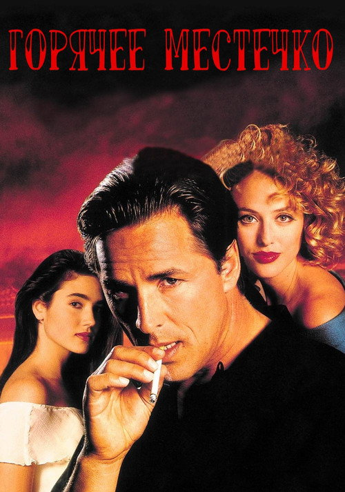
Горячее местечко
мелодрама, криминал, триллер
Режиссер: Деннис Хоппер
В ролях: Дон Джонсон, Вирджиния Мэдсен, Дженнифер Коннелли

Запятнанная репутация
драма, мелодрама
Режиссер: Роберт Бентон
В ролях: Энтони Хопкинс, Николь Кидман, Эд Харрис

Капитан Фантастик
приключения, драма
Режиссер: Мэтт Росс
В ролях: Вигго Мортенсен, Джордж Маккей, Samantha Isler

Третья персона
драма, мелодрама
Режиссер: Paul Haggis
В ролях: Лиам Нисон, Мила Кунис, Эдриен Броуди

Семь жизней
драма
Режиссер: Gabriele Muccino
В ролях: Уилл Смит, Розарио Доусон, Вуди Харрельсон

Совокупность лжи
боевик, драма, триллер
Режиссер: Ридли Скотт
В ролях: Леонардо ДиКаприо, Рассел Кроу, Гольшифте Фарахани

Спасти рядового Райана
военный, драма, история
Режиссер: Стивен Спилберг
В ролях: Том Хэнкс, Том Сайзмор, Эдвард Бёрнс

Народ против Ларри Флинта
драма
Режиссер: Милош Форман
В ролях: Вуди Харрельсон, Courtney Love, Эдвард Нортон

С широко закрытыми глазами
драма, триллер, детектив
Режиссер: Стэнли Кубрик
В ролях: Том Круз, Николь Кидман, Сидни Поллак

Запах женщины
драма
Режиссер: Martin Brest
В ролях: Аль Пачино, Крис О’Доннелл, Джеймс Ребхорн

Побег из Шоушенка
драма, криминал
Режиссер: Фрэнк Дарабонт
В ролях: Тим Роббинс, Морган Фримен, Боб Гантон

Талантливый мистер Рипли
триллер, криминал, драма
Режиссер: Энтони Мингелла
В ролях: Мэтт Деймон, Гвинет Пэлтроу, Джуд Лоу

Подмена
криминал, драма, детектив
Режиссер: Клинт Иствуд
В ролях: Анджелина Джоли, Джон Малкович, Джеффри Донован

Железная хватка
драма, приключения, вестерн
Режиссер: Джоэл Коэн
В ролях: Джефф Бриджес, Хейли Стайнфелд, Мэтт Деймон

Преисподняя
триллер, вестерн, драма
Режиссер: Мартин Колховен
В ролях: Гай Пирс, Дакота Фэннинг, Карис ван Хаутен

Человек дождя
драма
Режиссер: Барри Левинсон
В ролях: Дастин Хоффман, Том Круз, Валерия Голино

Игра в имитацию
история, драма, триллер, военный
Режиссер: Мортен Тильдум
В ролях: Бенедикт Камбербэтч, Кира Найтли, Мэтью Гуд

Бёрдмэн
драма, комедия
Режиссер: Алехандро Гонсалес Иньярриту
В ролях: Майкл Китон, Эмма Стоун, Зак Галифианакис

Книга Генри
драма, триллер, детектив
Режиссер: Колин Треворроу
В ролях: Наоми Уоттс, Джейден Мартелл, Джейкоб Трамбле

Три дня на побег
мелодрама, драма, триллер, криминал
Режиссер: Paul Haggis
В ролях: Рассел Кроу, Элизабет Бэнкс, Тай Симпкинс
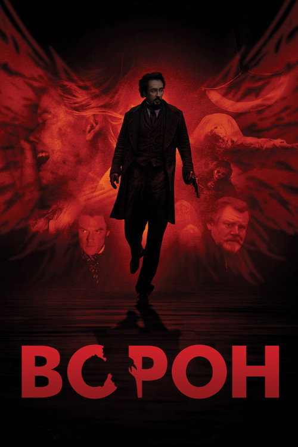
Ворон
криминал, триллер, детектив
Режиссер: Джеймс МакТиг
В ролях: Джон Кьюсак, Люк Эванс, Элис Ив

Поймай меня, если сможешь
драма, криминал
Режиссер: Стивен Спилберг
В ролях: Леонардо ДиКаприо, Том Хэнкс, Кристофер Уокен

Престиж
драма, детектив, фантастика
Режиссер: Кристофер Нолан
В ролях: Хью Джекман, Кристиан Бейл, Майкл Кейн

Кожа, в которой я живу
драма, ужасы, детектив, триллер
Режиссер: Педро Альмодовар
В ролях: Антонио Бандерас, Елена Анайя, Marisa Paredes

Отступники
драма, триллер, криминал
Режиссер: Мартин Скорсезе
В ролях: Леонардо ДиКаприо, Мэтт Деймон, Джек Николсон

Жизнь Пи
приключения, драма
Режиссер: 李安
В ролях: Сурадж Шарма, Ирфан Кхан, Ayush Tandon

Союзники
боевик, драма, военный, мелодрама, триллер
Режиссер: Роберт Земекис
В ролях: Брэд Питт, Марион Котийяр, Джаред Харрис

Великий Гэтсби
драма, мелодрама
Режиссер: Баз Лурман
В ролях: Леонардо ДиКаприо, Тоби Магуайр, Кэри Маллиган

Красота по-американски
драма
Режиссер: Sam Mendes
В ролях: Кевин Спейси, Аннетт Бенинг, Тора Бёрч

Игры разума
драма, мелодрама
Режиссер: Рон Ховард
В ролях: Рассел Кроу, Дженнифер Коннелли, Эд Харрис

Порок на экспорт
триллер, криминал, детектив
Режиссер: Дэвид Кроненберг
В ролях: Вигго Мортенсен, Наоми Уоттс, Венсан Кассель

Реквием по мечте
криминал, драма
Режиссер: Даррен Аронофски
В ролях: Эллен Бёрстин, Джаред Лето, Дженнифер Коннелли

Легенды осени
драма, вестерн, мелодрама, военный
Режиссер: Эдвард Цвик
В ролях: Брэд Питт, Энтони Хопкинс, Айдан Куинн

Кровавый алмаз
драма, триллер, боевик
Режиссер: Эдвард Цвик
В ролях: Леонардо ДиКаприо, Джимон Хонсу, Дженнифер Коннелли

Жестокие игры
драма, мелодрама
Режиссер: Roger Kumble
В ролях: Сара Мишель Геллар, Райан Филлипп, Риз Уизерспун

Город воров
криминал, драма, триллер
Режиссер: Бен Аффлек
В ролях: Бен Аффлек, Джереми Реннер, Ребекка Холл

Судья
драма
Режиссер: Дэвид Добкин
В ролях: Роберт Дауни мл., Роберт Дюваль, Вера Фармига

Большая игра
драма, криминал
Режиссер: Aaron Sorkin
В ролях: Джессика Честейн, Идрис Эльба, Кевин Костнер

Гран Торино
драма
Режиссер: Клинт Иствуд
В ролях: Клинт Иствуд, Christopher Carley, Bee Vang

Кручёный мяч
драма, мелодрама
Режиссер: Robert Lorenz
В ролях: Клинт Иствуд, Эми Адамс, Джастин Тимберлейк

Экипаж
драма
Режиссер: Роберт Земекис
В ролях: Дензел Вашингтон, Дон Чидл, Келли Райлли

Изгой
приключения, драма
Режиссер: Роберт Земекис
В ролях: Том Хэнкс, Хелен Хант, Chris Noth

Гнев
боевик, драма, триллер
Режиссер: Тони Скотт
В ролях: Дензел Вашингтон, Дакота Фэннинг, Кристофер Уокен

Последний самурай
драма, боевик, военный
Режиссер: Эдвард Цвик
В ролях: Том Круз, Кэн Ватанабэ, Тимоти Сполл

Малышка на миллион
драма
Режиссер: Клинт Иствуд
В ролях: Клинт Иствуд, Хилари Суэнк, Морган Фримен

Олдбой
драма, триллер, детектив, боевик
Режиссер: Пак Чхан Ук
В ролях: Чхве Мин-сик, 유지태, 강혜정

Несколько хороших парней
драма
Режиссер: Роб Райнер
В ролях: Том Круз, Джек Николсон, Деми Мур

Холодная гора
военный, история, приключения, мелодрама
Режиссер: Энтони Мингелла
В ролях: Джуд Лоу, Николь Кидман, Рене Зеллвегер

Воровка книг
драма
Режиссер: Brian Percival
В ролях: Джеффри Раш, Софи Нелисс, Эмили Уотсон

Чёрный лебедь
драма, триллер, ужасы
Режиссер: Даррен Аронофски
В ролях: Натали Портман, Мила Кунис, Венсан Кассель

Малхолланд Драйв
триллер, драма, детектив
Режиссер: Дэвид Линч
В ролях: Наоми Уоттс, Laura Harring, Джастин Теру

Ультиматум Борна
боевик, драма, детектив, триллер
Режиссер: Пол Гринграсс
В ролях: Мэтт Деймон, Джулия Стайлз, Дэвид Стрэтэйрн

Превосходство Борна
боевик, драма, триллер
Режиссер: Пол Гринграсс
В ролях: Мэтт Деймон, Франка Потенте, Брайан Кокс

Идентификация Борна
боевик, драма, детектив, триллер
Режиссер: Даг Лайман
В ролях: Мэтт Деймон, Франка Потенте, Крис Купер

Крепкий орешек
боевик, триллер
Режиссер: Джон МакТирнан
В ролях: Брюс Уиллис, Алан Рикман, Александр Годунов

Крепкий орешек 4.0
боевик, триллер
Режиссер: Лен Уайзман
В ролях: Брюс Уиллис, Тимоти Олифант, Джастин Лонг

Крепкий орешек 3: Возмездие
боевик, триллер
Режиссер: Джон МакТирнан
В ролях: Брюс Уиллис, Джереми Айронс, Сэмюэл Л. Джексон

Крепкий орешек 2
боевик, триллер
Режиссер: Ренни Харлин
В ролях: Брюс Уиллис, Бонни Беделиа, Уильям Сэдлер

Форсаж: Хоббс и Шоу
боевик, приключения, комедия
Режиссер: Дэвид Литч
В ролях: Дуэйн 'Скала' Джонсон, Джейсон Стейтем, Идрис Эльба

Форсаж 8
боевик, криминал, триллер
Режиссер: Ф. Гэри Грей
В ролях: Вин Дизель, Джейсон Стейтем, Дуэйн 'Скала' Джонсон

Форсаж 7
боевик, криминал, триллер
Режиссер: Джеймс Ван
В ролях: Вин Дизель, Пол Уокер, Дуэйн 'Скала' Джонсон

Форсаж 6
боевик, триллер, криминал
Режиссер: Джастин Лин
В ролях: Вин Дизель, Пол Уокер, Дуэйн 'Скала' Джонсон

Форсаж
боевик, криминал, триллер
Режиссер: Роб Коэн
В ролях: Пол Уокер, Вин Дизель, Мишель Родригес

Форсаж 4
боевик, криминал, триллер
Режиссер: Джастин Лин
В ролях: Вин Дизель, Пол Уокер, Мишель Родригес

Двойной форсаж
боевик, криминал, триллер
Режиссер: Джон Синглтон
В ролях: Пол Уокер, Тайриз Гибсон, Ева Мендес

Форсаж 5
боевик, триллер, криминал
Режиссер: Джастин Лин
В ролях: Вин Дизель, Пол Уокер, Джордана Брюстер

Шерлок Холмс
приключения, криминал, детектив
Режиссер: Гай Ричи
В ролях: Роберт Дауни мл., Джуд Лоу, Рэйчел МакАдамс

Шерлок Холмс: Игра теней
приключения, детектив, криминал
Режиссер: Гай Ричи
В ролях: Роберт Дауни мл., Джуд Лоу, Нуми Рапас

007: Спектр
боевик, приключения, триллер
Режиссер: Sam Mendes
В ролях: Дэниел Крейг, Кристоф Вальц, Леа Сейду

007: Завтра не умрёт никогда
приключения, боевик, триллер
Режиссер: Роджер Споттисвуд
В ролях: Пирс Броснан, Джонатан Прайс, Мишель Йео

007: Умри, но не сейчас
приключения, боевик, триллер
Режиссер: Ли Тамахори
В ролях: Пирс Броснан, Хэлли Берри, Тоби Стивенс

007: И целого мира мало
приключения, боевик, триллер
Режиссер: Майкл Эптед
В ролях: Пирс Броснан, Софи Марсо, Роберт Карлайл

007: Золотой Глаз
приключения, боевик, триллер
Режиссер: Мартин Кэмпбелл
В ролях: Пирс Броснан, Шон Бин, Izabella Scorupco

007: Казино Рояль
приключения, боевик, триллер
Режиссер: Мартин Кэмпбелл
В ролях: Дэниел Крейг, Ева Грин, Мадс Миккельсен

007: Квант милосердия
приключения, боевик, триллер
Режиссер: Марк Форстер
В ролях: Дэниел Крейг, Ольга Куриленко, Матьё Амальрик

007: Координаты «Скайфолл»
боевик, приключения, триллер
Режиссер: Sam Mendes
В ролях: Дэниел Крейг, Джуди Денч, Хавьер Бардем

Малыш на драйве
боевик, криминал
Режиссер: Эдгар Райт
В ролях: Энсел Элгорт, Кевин Спейси, Лили Джеймс

Рэмбо: Первая Кровь
боевик, приключения, триллер, военный
Режиссер: Ted Kotcheff
В ролях: Сильвестр Сталлоне, Ричард Кренна, Брайан Деннехи

Ронин
боевик, триллер, криминал
Режиссер: John Frankenheimer
В ролях: Роберт Де Ниро, Жан Рено, Наташа Макэлхоун

Убить Билла 2
боевик, криминал, триллер
Режиссер: Квентин Тарантино
В ролях: Ума Турман, Дэвид Кэррадайн, Дэрил Ханна

Леон
криминал, драма, боевик
Режиссер: Люк Бессон
В ролях: Жан Рено, Натали Портман, Гэри Олдман

Расплата
криминал, триллер, драма
Режиссер: Гэвин О'Коннор
В ролях: Бен Аффлек, Анна Кендрик, Джей Кей Симмонс

Агенты А.Н.К.Л.
комедия, боевик, приключения
Режиссер: Гай Ричи
В ролях: Генри Кавилл, Арми Хаммер, Алисия Викандер

Плохие парни 2
боевик, криминал, комедия
Режиссер: Майкл Бэй
В ролях: Мартин Лоуренс, Уилл Смит, Хорди Молья

Война
боевик, криминал, триллер
Режиссер: Philip G. Atwell
В ролях: Джет Ли, Джейсон Стейтем, John Lone

Убить Билла
боевик, криминал
Режиссер: Квентин Тарантино
В ролях: Ума Турман, Люси Лью, Вивика А. Фокс

Нокаут
боевик, триллер, драма
Режиссер: Steven Soderbergh
В ролях: Джина Карано, Майкл Фассбендер, Ченнинг Татум

36 ступеней Шаолиня
боевик, приключения
Режиссер: Лау Ка-Люн
В ролях: Гордон Лю, Ло Лие, Джон Чун

Неудержимые
триллер, приключения, боевик
Режиссер: Сильвестр Сталлоне
В ролях: Сильвестр Сталлоне, Джейсон Стейтем, Джет Ли

Код апокалипсиса
боевик, приключения, триллер
Режиссер: Вадим Шмелёв
В ролях: Анастасия Заворотнюк, Венсан Перес, Владимир Меньшов

Лучшие из лучших
боевик, драма
Режиссер: Robert Radler
В ролях: Эрик Робертс, Phillip Rhee, Джеймс Эрл Джонс

Мистер и миссис Смит
боевик, комедия, драма, триллер
Режиссер: Даг Лайман
В ролях: Брэд Питт, Анджелина Джоли, Винс Вон

Стрелок
драма, боевик, триллер
Режиссер: Антуан Фукуа
В ролях: Марк Уолберг, Майкл Пенья, Дэнни Гловер

Шаолинь против ниндзя
боевик
Режиссер: Robert Tai
В ролях: Александр Ло Рей, William Yen Ming-Chang, Алан Чуй Чхун Сань

Джек Ричер
криминал, драма, триллер, боевик
Режиссер: Кристофер МакКуорри
В ролях: Том Круз, Розамунд Пайк, Ричард Дженкинс

Эффект колибри
боевик, триллер
Режиссер: Стивен Найт
В ролях: Джейсон Стейтем, Agata Buzek, Vicky McClure

Плохие парни
боевик, комедия, криминал, триллер
Режиссер: Майкл Бэй
В ролях: Уилл Смит, Мартин Лоуренс, Теа Леони

47 ронинов
драма, боевик, фэнтези
Режиссер: Карл Ринш
В ролях: Киану Ривз, Хироюки Санада, Ко Сибасаки

Джон Уик
боевик, триллер
Режиссер: Чад Стахелски
В ролях: Киану Ривз, Микаэль Нюквист, Альфи Аллен

Бесславные ублюдки
драма, триллер, военный
Режиссер: Квентин Тарантино
В ролях: Брэд Питт, Мелани Лорэн, Кристоф Вальц

Перевозчик
боевик, криминал, триллер
Режиссер: Кори Юэнь Гуай
В ролях: Джейсон Стейтем, Шу Ци, François Berléand

Хон Гиль Дон
боевик, приключения, фэнтези
Режиссер: 김길인
В ролях: Yong-ho Ri, Gwon Ri, Chang Son Hui

Серый человек
боевик, триллер
Режиссер: Джо Руссо
В ролях: Райан Гослинг, Крис Эванс, Ана де Армас

Быстрее пули
боевик, комедия, триллер
Режиссер: Дэвид Литч
В ролях: Брэд Питт, Джоуи Кинг, Аарон Тейлор-Джонсон

Плачущий убийца
боевик, криминал
Режиссер: Кристоф Ган
В ролях: Марк Дакаскос, Julie Condra, Рэй Чонг

Защитник
боевик, криминал, триллер
Режиссер: Боаз Якин
В ролях: Джейсон Стейтем, Chris Sarandon, Джеймс Хонг

Ниндзя-убийца
боевик, приключения, триллер
Режиссер: Джеймс МакТиг
В ролях: 비, Наоми Харрис, Бен Майлз

Стелс
фантастика
Режиссер: Роб Коэн
В ролях: Джош Лукас, Джессика Бил, Джейми Фокс

Скала
боевик, приключения, триллер
Режиссер: Майкл Бэй
В ролях: Шон Коннери, Николас Кейдж, Эд Харрис

Перевозчик 2
боевик, триллер, криминал
Режиссер: Луи Летерье
В ролях: Джейсон Стейтем, Эмбер Валлетта, Alessandro Gassmann
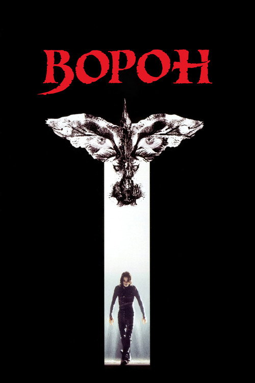
Ворон
фэнтези, боевик, триллер
Режиссер: Алекс Пройас
В ролях: Brandon Lee, Rochelle Davis, Эрни Хадсон

Скорость
боевик, триллер
Режиссер: Ян де Бонт
В ролях: Киану Ривз, Деннис Хоппер, Сандра Буллок

Кто я?
приключения, боевик, комедия, триллер
Режиссер: Джеки Чан
В ролях: Джеки Чан, Michelle Ferre, 山本未來

Пьяный мастер
боевик, комедия
Режиссер: 袁和平
В ролях: Джеки Чан, 袁小田, 황정리

Доспехи Бога 2: Операция Кондор
боевик, приключения, криминал, триллер
Режиссер: Джеки Чан
В ролях: Джеки Чан, 鄭裕玲, Eva Cobo

Доспехи Бога
приключения, боевик, комедия
Режиссер: Джеки Чан
В ролях: Джеки Чан, 譚詠麟, Lola Forner

Человек-паук: Паутина вселенных
мультфильм, боевик, приключения, фантастика
Режиссер: Kemp Powers
В ролях: Шамик Мур, Хейли Стайнфелд, Брайан Тайри Генри

Человек-паук: Через вселенные
мультфильм, боевик, приключения, фантастика
Режиссер: Боб Персичетти
В ролях: Шамик Мур, Джейк Джонсон, Хейли Стайнфелд

Дюна: Часть вторая
фантастика, приключения
Режиссер: Дени Вильнёв
В ролях: Тимоти Шаламе, Зендея, Ребекка Фергюсон

Дюна
фантастика, приключения
Режиссер: Дени Вильнёв
В ролях: Тимоти Шаламе, Ребекка Фергюсон, Оскар Айзек

Матрица: Революция
приключения, боевик, триллер, фантастика
Режиссер: Энди Вачовски
В ролях: Киану Ривз, Лоуренс Фишборн, Кэрри-Энн Мосс

Матрица: Перезагрузка
приключения, боевик, триллер, фантастика
Режиссер: Ларри Вачовски
В ролях: Киану Ривз, Лоуренс Фишборн, Кэрри-Энн Мосс

Аниматрица
мультфильм, фантастика
Режиссер: Питер Чунг
В ролях: Киану Ривз, Кэрри-Энн Мосс, Клэйтон Уотсон

Звёздный путь
фантастика, боевик, приключения
Режиссер: Джей Джей Абрамс
В ролях: Крис Пайн, Закари Куинто, Леонард Нимой

Стартрек: Возмездие
боевик, приключения, фантастика
Режиссер: Джей Джей Абрамс
В ролях: Крис Пайн, Закари Куинто, Зои Салдана

Стартрек: Бесконечность
боевик, приключения, фантастика
Режиссер: Джастин Лин
В ролях: Крис Пайн, Закари Куинто, Карл Урбан

Изгой-один: Звёздные войны. Истории
боевик, приключения, фантастика
Режиссер: Гарет Эдвардс
В ролях: Фелисити Джонс, Диего Луна, Алан Тьюдик

Хан Соло: Звёздные войны. Истории
фантастика, приключения, боевик
Режиссер: Рон Ховард
В ролях: Олден Эйренрайк, Йонас Суотамо, Вуди Харрельсон

Звёздные войны: Эпизод 8 - Последние джедаи
приключения, боевик, фантастика
Режиссер: Райан Джонсон
В ролях: Марк Хэмилл, Кэрри Фишер, Адам Драйвер

Звёздные войны: Эпизод 7 - Пробуждение силы
приключения, боевик, фантастика
Режиссер: Джей Джей Абрамс
В ролях: Дейзи Ридли, Джон Бойега, Оскар Айзек

Звёздные войны: Эпизод 6 - Возвращение Джедая
приключения, боевик, фантастика
Режиссер: Ричард Маркуанд
В ролях: Марк Хэмилл, Харрисон Форд, Кэрри Фишер

Звёздные войны: Эпизод 5 - Империя наносит ответный удар
приключения, боевик, фантастика
Режиссер: Ирвин Кершнер
В ролях: Марк Хэмилл, Харрисон Форд, Кэрри Фишер

Звёздные войны: Эпизод 4 - Новая надежда
приключения, боевик, фантастика
Режиссер: Джордж Лукас
В ролях: Марк Хэмилл, Харрисон Форд, Кэрри Фишер

Звёздные войны: Эпизод 3 - Месть Ситхов
приключения, боевик, фантастика
Режиссер: Джордж Лукас
В ролях: Хейден Кристенсен, Юэн Макгрегор, Натали Портман

Звёздные войны: Эпизод 2 - Атака клонов
приключения, боевик, фантастика
Режиссер: Джордж Лукас
В ролях: Хейден Кристенсен, Юэн Макгрегор, Натали Портман

Звёздные войны: Эпизод 1 - Скрытая угроза
приключения, боевик, фантастика
Режиссер: Джордж Лукас
В ролях: Лиам Нисон, Юэн Макгрегор, Натали Портман

Терминатор: Тёмные судьбы
фантастика, боевик, приключения, триллер
Режиссер: Тим Миллер
В ролях: Линда Хэмилтон, Арнольд Шварценеггер, Маккензи Дэвис

Терминатор: Генезис
фантастика, боевик, триллер
Режиссер: Алан Тейлор
В ролях: Эмилия Кларк, Джай Кортни, Арнольд Шварценеггер

Чужой 3
фантастика, боевик, ужасы
Режиссер: Дэвид Финчер
В ролях: Сигурни Уивер, Чарльз С. Даттон, Чарльз Дэнс

Чужой: Воскрешение
фантастика, ужасы, боевик
Режиссер: Жан-Пьер Жёне
В ролях: Сигурни Уивер, Вайнона Райдер, Доминик Пинон
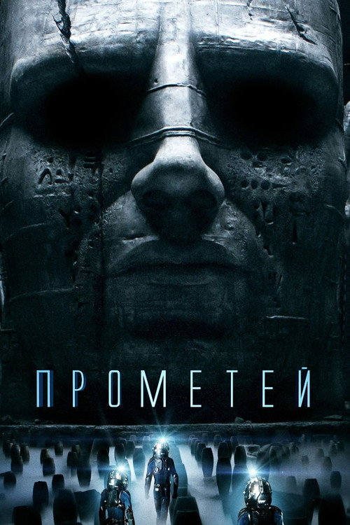
Прометей
фантастика, детектив, ужасы
Режиссер: Ридли Скотт
В ролях: Нуми Рапас, Майкл Фассбендер, Шарлиз Терон

Чужой: Завет
ужасы, фантастика
Режиссер: Ридли Скотт
В ролях: Майкл Фассбендер, Кэтрин Уотерстон, Билли Крудап

Люди в чёрном: Интернэшнл
комедия, фантастика, боевик, приключения
Режиссер: Ф. Гэри Грей
В ролях: Крис Хемсворт, Тесса Томпсон, Кумэйл Нанджиани

Люди в чёрном 3
боевик, комедия, фантастика
Режиссер: Барри Зонненфельд
В ролях: Уилл Смит, Томми Ли Джонс, Джош Бролин

Люди в чёрном 2
боевик, комедия, фантастика
Режиссер: Барри Зонненфельд
В ролях: Томми Ли Джонс, Уилл Смит, Рип Торн

Люди в чёрном
боевик, приключения, комедия, фантастика
Режиссер: Барри Зонненфельд
В ролях: Томми Ли Джонс, Уилл Смит, Линда Фиорентино

Обитель зла: Возмездие
боевик, ужасы, фантастика
Режиссер: Пол У. С. Андерсон
В ролях: Милла Йовович, Сиенна Гиллори, Мишель Родригес

Обитель зла
ужасы, боевик, фантастика
Режиссер: Пол У. С. Андерсон
В ролях: Милла Йовович, Мишель Родригес, Эрик Мабиус

Обитель зла 2: Апокалипсис
ужасы, боевик, фантастика
Режиссер: Александр Уитт
В ролях: Милла Йовович, Сиенна Гиллори, Одед Фер

Обитель зла 3
ужасы, боевик, фантастика
Режиссер: Рассел Малкэхи
В ролях: Милла Йовович, Одед Фер, Эли Лартер

Бегущий по лезвию 2049
фантастика, драма
Режиссер: Дени Вильнёв
В ролях: Райан Гослинг, Харрисон Форд, Ана де Армас

Эффект бабочки
фантастика, триллер
Режиссер: Эрик Бресс
В ролях: Эштон Кутчер, Эми Смарт, Мелора Уолтерс

День независимости
боевик, приключения, фантастика
Режиссер: Роланд Эммерих
В ролях: Уилл Смит, Билл Пуллман, Джефф Голдблюм

Безумный Макс: Дорога Ярости
боевик, приключения, фантастика
Режиссер: Джордж Миллер
В ролях: Том Харди, Шарлиз Терон, Николас Холт

Первому игроку приготовиться
приключения, боевик, фантастика
Режиссер: Стивен Спилберг
В ролях: Тай Шеридан, Оливия Кук, Бен Мендельсон

Земля будущего
приключения, семейный, детектив, фантастика
Режиссер: Брэд Бёрд
В ролях: Бритт Робертсон, Джордж Клуни, Рэффи Кэссиди

Игра Эндера
фантастика, боевик, приключения
Режиссер: Гэвин Худ
В ролях: Эйса Баттерфилд, Хейли Стайнфелд, Харрисон Форд

Кинг Конг
приключения, драма, боевик
Режиссер: Питер Джексон
В ролях: Наоми Уоттс, Эдриен Броуди, Джек Блэк

Грань будущего
боевик, фантастика
Режиссер: Даг Лайман
В ролях: Том Круз, Эмили Блант, Брендан Глисон

Бездна
приключения, триллер, фантастика
Режиссер: Джеймс Кэмерон
В ролях: Эд Харрис, Мэри Элизабет Мастрантонио, Майкл Бин

РобоКоп
боевик, приключения, криминал, фантастика, триллер
Режиссер: José Padilha
В ролях: Юэль Киннаман, Гэри Олдман, Майкл Китон

Смертельная гонка
боевик, триллер, фантастика
Режиссер: Пол У. С. Андерсон
В ролях: Джейсон Стейтем, Джоан Аллен, Иэн МакШейн

Вторжение
ужасы, детектив, фантастика, триллер
Режиссер: Oliver Hirschbiegel
В ролях: Николь Кидман, Дэниел Крейг, Jackson Bond

Ван Хельсинг
ужасы, приключения, боевик
Режиссер: Стивен Соммерс
В ролях: Хью Джекман, Кейт Бекинсейл, Ричард Роксбург

Война миров Z
боевик, ужасы, фантастика, триллер
Режиссер: Марк Форстер
В ролях: Брэд Питт, Мирей Инос, Даниэлла Кертес

День, когда Земля остановилась
драма, фантастика, триллер
Режиссер: Скотт Дерриксон
В ролях: Киану Ривз, Дженнифер Коннелли, Джейден Смит

Искусственный разум
драма, фантастика, приключения
Режиссер: Стивен Спилберг
В ролях: Хейли Джоэл Осмент, Джуд Лоу, Фрэнсис О'Коннор

Неуязвимый
триллер, драма, детектив
Режиссер: М. Найт Шьямалан
В ролях: Брюс Уиллис, Сэмюэл Л. Джексон, Робин Райт

Эон Флакс
фантастика, боевик, триллер
Режиссер: Karyn Kusama
В ролях: Шарлиз Терон, Мартон Чокаш, Джонни Ли Миллер

Я - легенда
драма, фантастика, триллер
Режиссер: Фрэнсис Лоуренс
В ролях: Уилл Смит, Алиси Брага, Чарльз Тахан
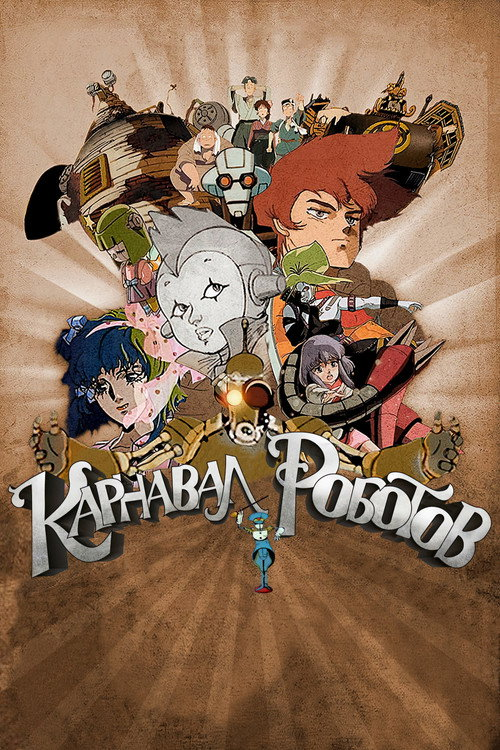
Карнавал роботов
мультфильм, фантастика
Режиссер: 福島敦子
В ролях: Кумико Такидзава, 三輪勝恵, Тиса Йокояма

Области тьмы
триллер, детектив, фантастика
Режиссер: Нил Бёргер
В ролях: Брэдли Купер, Роберт Де Ниро, Эбби Корниш

Ковбои против пришельцев
боевик, фантастика, триллер, вестерн
Режиссер: Джон Фавро
В ролях: Дэниел Крейг, Харрисон Форд, Оливия Уайлд

Нечто
ужасы, фантастика, детектив
Режиссер: Matthijs van Heijningen Jr.
В ролях: Мэри Элизабет Уинстэд, Джоэл Эдгертон, Ulrich Thomsen

Гаттака
триллер, фантастика, детектив, мелодрама
Режиссер: Эндрю Никкол
В ролях: Итан Хоук, Ума Турман, Джуд Лоу

Пятый элемент
фантастика, боевик, приключения
Режиссер: Люк Бессон
В ролях: Брюс Уиллис, Милла Йовович, Гэри Олдман

Алита: Боевой Ангел
боевик, фантастика, приключения
Режиссер: Роберт Родригес
В ролях: Роза Салазар, Кристоф Вальц, Дженнифер Коннелли

Вспомнить всё
боевик, приключения, фантастика
Режиссер: Пол Верховен
В ролях: Арнольд Шварценеггер, Rachel Ticotin, Шэрон Стоун

Звездный десант
приключения, боевик, триллер, фантастика
Режиссер: Пол Верховен
В ролях: Каспер Ван Дин, Дина Мейер, Дениз Ричардс

Я, робот
боевик, фантастика
Режиссер: Алекс Пройас
В ролях: Уилл Смит, Бриджет Мойнэхэн, Алан Тьюдик

Морской бой
триллер, боевик, приключения, фантастика
Режиссер: Питер Берг
В ролях: Тейлор Китч, Александр Скарсгард, Рианна

Исходный код
триллер, фантастика, детектив
Режиссер: Данкан Джонс
В ролях: Джейк Джилленхол, Мишель Монахэн, Вера Фармига

Живая сталь
боевик, фантастика, драма
Режиссер: Шон Леви
В ролях: Хью Джекман, Дакота Гойо, Эванджелин Лилли
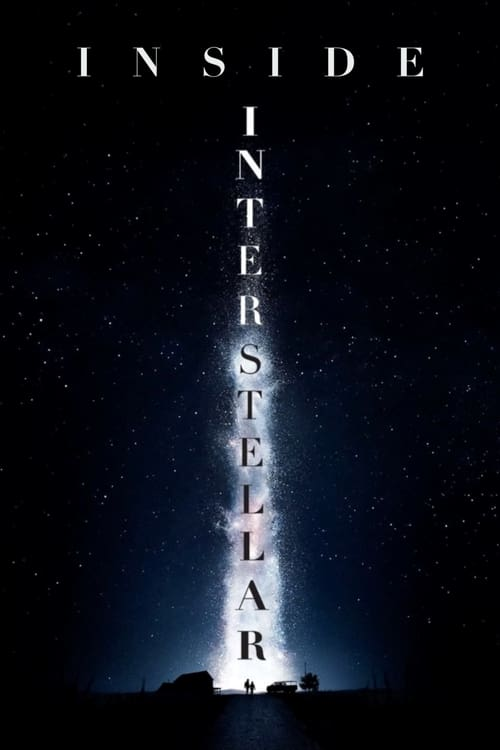
Inside 'Interstellar'
документальный
Режиссер: Jason Hillhouse
В ролях: Кристофер Нолан, Эмма Томас, Линда Обст

Пассажиры
драма, мелодрама, фантастика
Режиссер: Мортен Тильдум
В ролях: Дженнифер Лоуренс, Крис Прэтт, Майкл Шийн

Эквилибриум
боевик, фантастика, триллер
Режиссер: Курт Уиммер
В ролях: Кристиан Бейл, Тэй Диггз, Энгус Макфадьен

Мумия
приключения, боевик, фэнтези
Режиссер: Стивен Соммерс
В ролях: Брендан Фрейзер, Рэйчел Вайс, Джон Ханна

G.I. Joe: Бросок кобры
приключения, боевик, триллер, фантастика
Режиссер: Стивен Соммерс
В ролях: Адевале Акинойе-Агбаже, Кристофер Экклстон, Ли Бён-хон

Бегущий по лезвию
фантастика, драма, триллер
Режиссер: Ридли Скотт
В ролях: Харрисон Форд, Рутгер Хауэр, Шон Янг

Район №9
фантастика
Режиссер: Нил Бломкамп
В ролях: Шарлто Копли, Джейсон Коуп, Натали Болтт

Факультет
ужасы, фантастика
Режиссер: Роберт Родригес
В ролях: Джош Хартнетт, Элайджа Вуд, Джордана Брюстер

Аватар
фантастика, боевик, приключения
Режиссер: Джеймс Кэмерон
В ролях: Сэм Уортингтон, Зои Салдана, Сигурни Уивер

Время
боевик, триллер, фантастика
Режиссер: Эндрю Никкол
В ролях: Аманда Сайфред, Джастин Тимберлейк, Киллиан Мёрфи

Противостояние
боевик, фантастика, триллер
Режиссер: Джеймс Вон
В ролях: Джет Ли, Карла Гуджино, Делрой Линдо

Джонни Мнемоник
фантастика, боевик, приключения
Режиссер: Robert Longo
В ролях: Киану Ривз, Дина Мейер, Такеши Китано

Тёмный город
детектив, фантастика
Режиссер: Алекс Пройас
В ролях: Руфус Сьюэлл, Уильям Хёрт, Кифер Сазерленд

Прибытие
драма, фантастика, детектив
Режиссер: Дени Вильнёв
В ролях: Эми Адамс, Джереми Реннер, Форест Уитакер

Телепорт
боевик, приключения, фантастика
Режиссер: Даг Лайман
В ролях: Хейден Кристенсен, Джейми Белл, Сэмюэл Л. Джексон

Супер 8
триллер, фантастика, детектив
Режиссер: Джей Джей Абрамс
В ролях: Джоэл Кортни, Эль Фэннинг, Riley Griffiths

Особое мнение
фантастика, боевик, триллер
Режиссер: Стивен Спилберг
В ролях: Том Круз, Саманта Мортон, Колин Фаррелл

Напролом
боевик, триллер, фантастика
Режиссер: Stephen St. Leger
В ролях: Гай Пирс, Мэгги Грейс, Винсент Риган

Люси
боевик, фантастика
Режиссер: Люк Бессон
В ролях: Скарлетт Йоханссон, Морган Фримен, Чхве Мин-сик

Трон: Наследие
приключения, боевик, фантастика
Режиссер: Джозеф Косински
В ролях: Гаррет Хедлунд, Оливия Уайлд, Джефф Бриджес

Остров
боевик, триллер, фантастика, приключения
Режиссер: Майкл Бэй
В ролях: Юэн Макгрегор, Скарлетт Йоханссон, Джимон Хонсу

Хищник
фантастика, боевик, приключения, триллер
Режиссер: Джон МакТирнан
В ролях: Арнольд Шварценеггер, Карл Уэзерс, Кевин Питер Холл

Нечто
ужасы, детектив, фантастика
Режиссер: Джон Карпентер
В ролях: Курт Рассел, Уилфорд Бримли, Т. К. Картер

Тяжёлый металл
мультфильм, фантастика, приключения, фэнтези, музыка
Режиссер: Gerald Potterton
В ролях: Роджер Бампасс, Джон Кэнди, Jackie Burroughs

Обливион
боевик, фантастика, приключения, детектив
Режиссер: Джозеф Косински
В ролях: Том Круз, Морган Фримен, Ольга Куриленко

Меняющие реальность
фантастика, триллер, мелодрама
Режиссер: Джордж Нолфи
В ролях: Мэтт Деймон, Эмили Блант, Джон Слэттери

Облачный атлас
драма, фантастика
Режиссер: Энди Вачовски
В ролях: Том Хэнкс, Хэлли Берри, Джим Бродбент

«V» значит Вендетта
боевик, триллер, фантастика
Режиссер: Джеймс МакТиг
В ролях: Натали Портман, Хьюго Уивинг, Стивен Ри

Миссия «Серенити»
фантастика, боевик, приключения, триллер
Режиссер: Джосс Уидон
В ролях: Нейтан Филлион, Саммер Глау, Джина Торрес

Начало
боевик, фантастика, приключения
Режиссер: Кристофер Нолан
В ролях: Леонардо ДиКаприо, Джозеф Гордон-Левитт, Кэн Ватанабэ

Аннигиляция
фантастика, ужасы
Режиссер: Алекс Гарленд
В ролях: Натали Портман, Дженнифер Джейсон Ли, Джина Родригес

Вспомнить всё
боевик, фантастика, триллер
Режиссер: Лен Уайзман
В ролях: Колин Фаррелл, Джессика Бил, Кейт Бекинсейл

Крик 6
ужасы, триллер, криминал
Режиссер: Мэтт Беттинелли-Олпин
В ролях: Мелисса Баррера, Дженна Ортега, Джасмин Савой Браун

Крик
ужасы, детектив
Режиссер: Тайлер Джиллетт
В ролях: Мелисса Баррера, Дженна Ортега, Мейсон Гудинг

Крик 4
ужасы, детектив
Режиссер: Уэс Крэйвен
В ролях: Дэвид Аркетт, Нив Кэмпбелл, Кортни Кокс

Крик 2
ужасы, детектив
Режиссер: Уэс Крэйвен
В ролях: Нив Кэмпбелл, Кортни Кокс, Дэвид Аркетт

Крик 3
ужасы, детектив
Режиссер: Уэс Крэйвен
В ролях: Дэвид Аркетт, Нив Кэмпбелл, Кортни Кокс

Крик
криминал, ужасы, детектив
Режиссер: Уэс Крэйвен
В ролях: Дэвид Аркетт, Нив Кэмпбелл, Кортни Кокс

Счастливого дня смерти
комедия, ужасы, детектив
Режиссер: Кристофер Лэндон
В ролях: Джессика Рот, Israel Broussard, Charles Aitken

Когда звонит незнакомец
ужасы, детектив
Режиссер: Саймон Уэст
В ролях: Камилла Белль, Кэти Кэссиди, Томми Флэнаган

Сайлент Хилл 2
триллер, ужасы, детектив
Режиссер: М. Дж. Бассетт
В ролях: Эделейд Клеменс, Шон Бин, Рада Митчелл
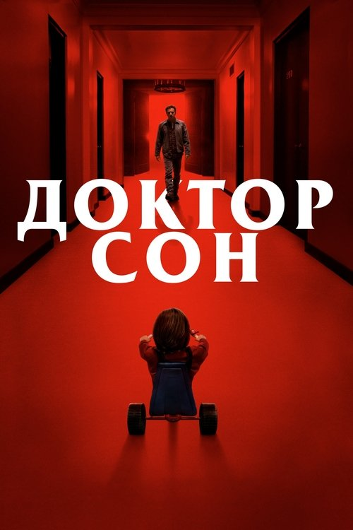
Доктор Сон
ужасы, фэнтези
Режиссер: Майк Флэнаган
В ролях: Юэн Макгрегор, Ребекка Фергюсон, Кайли Кёрран

Телекинез
драма, ужасы
Режиссер: Кимберли Пирс
В ролях: Хлоя Грейс Морец, Джулианна Мур, Габриэлла Уайлд

Последний дом слева
криминал, триллер, ужасы, драма
Режиссер: Ντένης Ηλιάδης
В ролях: Тони Голдуин, Моника Поттер, Сара Пэкстон

Звонок
ужасы, детектив
Режиссер: Гор Вербински
В ролях: Наоми Уоттс, Мартин Хендерсон, Дэвид Дорфман

Тихое место
ужасы, драма, фантастика
Режиссер: Джон Красински
В ролях: Эмили Блант, Джон Красински, Милли Симмондс

Забери мою душу
ужасы, детектив
Режиссер: Уэс Крэйвен
В ролях: Макс Тириот, Джон Магаро, Дензел Уитакер

Впусти меня. Сага
драма, ужасы, детектив
Режиссер: Мэтт Ривз
В ролях: Коди Смит-Макфи, Хлоя Грейс Морец, Ричард Дженкинс

Кошмар на улице Вязов
ужасы
Режиссер: Уэс Крэйвен
В ролях: Джон Сэксон, Рони Блейкли, Хэзер Лэнгенкэмп

Готика
ужасы, триллер, детектив
Режиссер: Матьё Кассовиц
В ролях: Хэлли Берри, Роберт Дауни мл., Чарльз С. Даттон

Сияние
ужасы, триллер
Режиссер: Стэнли Кубрик
В ролях: Джек Николсон, Шелли Дюваль, Danny Lloyd

Суспирия
ужасы
Режиссер: Dario Argento
В ролях: Джессика Харпер, Stefania Casini, Flavio Bucci

Экстрасенс
ужасы, триллер, детектив
Режиссер: Ник Мерфи
В ролях: Ребекка Холл, Доминик Уэст, Имельда Стонтон

Проклятие
ужасы, детектив, триллер
Режиссер: Такаси Симидзу
В ролях: Сара Мишель Геллар, Джейсон Бер, Такако Фудзи

Пираньи 3DD
ужасы, триллер, комедия
Режиссер: John Gulager
В ролях: Даниэль Панабэйкер, Matt Bush, Катрина Боуден

Дрожь земли
ужасы, боевик, фантастика, комедия
Режиссер: Рон Андервуд
В ролях: Кевин Бейкон, Фред Уорд, Финн Картер

Шестое чувство
детектив, триллер, драма
Режиссер: М. Найт Шьямалан
В ролях: Брюс Уиллис, Хейли Джоэл Осмент, Тони Коллетт

Птичий короб
ужасы, триллер, драма
Режиссер: Сюзанна Бир
В ролях: Сандра Буллок, Треванте Роудс, Джон Малкович

Мы
ужасы, детектив
Режиссер: Джордан Пил
В ролях: Лупита Нионго, Уинстон Дьюк, Элизабет Мосс

Сайлент Хилл
ужасы, детектив
Режиссер: Кристоф Ган
В ролях: Рада Митчелл, Шон Бин, Джоделль Ферланд

Астрал
ужасы, триллер
Режиссер: Джеймс Ван
В ролях: Патрик Уилсон, Роуз Бирн, Лин Шэй

Таинственный лес
драма, детектив, триллер
Режиссер: М. Найт Шьямалан
В ролях: Брайс Даллас Ховард, Хоакин Феникс, Эдриен Броуди

Никто не выжил
ужасы, триллер
Режиссер: 北村龍平
В ролях: Люк Эванс, Эделейд Клеменс, Лаура Рэмси

Феномен
ужасы, триллер
Режиссер: Dario Argento
В ролях: Дженнифер Коннелли, Daria Nicolodi, Fiore Argento

Явление
триллер, фантастика
Режиссер: М. Найт Шьямалан
В ролях: Марк Уолберг, Зоуи Дешанель, Джон Легуизамо

Явление
ужасы, триллер
Режиссер: Todd Lincoln
В ролях: Эшли Грин, Себастиан Стэн, Том Фелтон

Вакансия на жертву
ужасы, триллер
Режиссер: Нимрод Антал
В ролях: Кейт Бекинсейл, Люк Уилсон, Фрэнк Уэйли

День Святого Валентина
ужасы, триллер
Режиссер: Jamie Blanks
В ролях: Дениз Ричардс, Дэвид Борианаз, Марли Шелтон

Пираньи 3D
комедия, ужасы
Режиссер: Александр Ажа
В ролях: Элизабет Шу, Джерри О'Коннелл, Стивен Р. МакКуин

Хижина в лесу
ужасы, детектив, комедия
Режиссер: Дрю Годдард
В ролях: Кристен Коннолли, Фран Кранц, Крис Хемсворт

Туристас
ужасы, триллер
Режиссер: Джон Стокуэлл
В ролях: Джош Дюамель, Мелисса Джордж, Оливия Уайлд

Тело Дженнифер
ужасы, комедия
Режиссер: Karyn Kusama
В ролях: Меган Фокс, Аманда Сайфред, Джонни Симмонс

Другие
ужасы, детектив, триллер
Режиссер: Алехандро Аменабар
В ролях: Николь Кидман, Алакина Манн, Джеймс Бентли

Знаки
триллер, фантастика, ужасы
Режиссер: М. Найт Шьямалан
В ролях: Мел Гибсон, Хоакин Феникс, Рори Калкин

Городские легенды
ужасы, детектив
Режиссер: Jamie Blanks
В ролях: Алисия Уитт, Джаред Лето, Ребекка Гейхарт

Кошмар на улице Вязов
ужасы, детектив, триллер
Режиссер: Samuel Bayer
В ролях: Руни Мара, Кайл Галлнер, Джэки Ерл Хейли

Крик в общаге
ужасы, детектив
Режиссер: Stewart Hendler
В ролях: Briana Evigan, Leah Pipes, Rumer Willis

Восставший из ада 2
ужасы, триллер
Режиссер: Tony Randel
В ролях: Ashley Laurence, Клэр Хиггинс, Кеннет Крэнем

Восставший из ада
ужасы, триллер
Режиссер: Клайв Баркер
В ролях: Эндрю Робинсон, Клэр Хиггинс, Sean Chapman

Темная вода
ужасы, детектив
Режиссер: Вальтер Саллес
В ролях: Дженнифер Коннелли, Джон Си Райли, Тим Рот

Переводчица
криминал, триллер
Режиссер: Сидни Поллак
В ролях: Николь Кидман, Шон Пенн, Кэтрин Кинер

Дом грёз
детектив, драма, триллер
Режиссер: Джим Шеридан
В ролях: Дэниел Крейг, Наоми Уоттс, Рэйчел Вайс

Сплит
ужасы, триллер
Режиссер: М. Найт Шьямалан
В ролях: Джеймс МакЭвой, Аня Тейлор-Джой, Хейли Лу Ричардсон

Омерзительная восьмёрка
драма, детектив, вестерн
Режиссер: Квентин Тарантино
В ролях: Сэмюэл Л. Джексон, Курт Рассел, Дженнифер Джейсон Ли

Однажды в… Голливуде
комедия, драма, триллер
Режиссер: Квентин Тарантино
В ролях: Леонардо ДиКаприо, Брэд Питт, Марго Робби

Убить Миссис Тингл
комедия, триллер
Режиссер: Кевин Уильямсон
В ролях: Хелен Миррен, Кэти Холмс, Barry Watson

Кловерфилд, 10
триллер, фантастика, драма, ужасы
Режиссер: Дэн Трахтенберг
В ролях: Джон Гудман, Мэри Элизабет Уинстэд, Джон Галлахер мл.

Ветреная река
криминал, детектив, драма, триллер
Режиссер: Тейлор Шеридан
В ролях: Джереми Реннер, Элизабет Олсен, Гил Бирмингем

Лучшее предложение
драма, мелодрама, криминал
Режиссер: Джузеппе Торнаторе
В ролях: Джеффри Раш, Джим Стёрджесс, Сильвия Хукс

Власть страха
криминал, триллер, драма, детектив
Режиссер: Phillip Noyce
В ролях: Дензел Вашингтон, Анджелина Джоли, Куин Латифа

Старикам тут не место
криминал, триллер, вестерн
Режиссер: Джоэл Коэн
В ролях: Хавьер Бардем, Томми Ли Джонс, Джош Бролин

Законопослушный гражданин
драма, криминал, триллер
Режиссер: Ф. Гэри Грей
В ролях: Джейми Фокс, Джерард Батлер, Колм Мини

Игра
драма, триллер, детектив
Режиссер: Дэвид Финчер
В ролях: Майкл Дуглас, Шон Пенн, Дебора Кара Ангер

Подозрительные лица
драма, криминал, триллер
Режиссер: Брайан Сингер
В ролях: Stephen Baldwin, Гэбриэл Бирн, Бенисио дель Торо

Остров проклятых
драма, триллер, детектив
Режиссер: Мартин Скорсезе
В ролях: Леонардо ДиКаприо, Марк Руффало, Бен Кингсли

Иллюзия обмана
триллер, криминал
Режиссер: Луи Летерье
В ролях: Джесси Айзенберг, Вуди Харрельсон, Айла Фишер

Из Ада
ужасы, детектив, триллер
Режиссер: Альберт Хьюз
В ролях: Джонни Депп, Хизер Грэм, Иэн Холм

Забирая жизни
триллер
Режиссер: Ди Джей Карузо
В ролях: Анджелина Джоли, Итан Хоук, Кифер Сазерленд

Игра в прятки
ужасы, детектив
Режиссер: Джон Полсон
В ролях: Роберт Де Ниро, Дакота Фэннинг, Фамке Янссен

Цвет ночи
мелодрама, детектив, триллер
Режиссер: Ричард Раш
В ролях: Брюс Уиллис, Jane March, Рубен Блэйдз

Простая просьба
триллер, комедия, детектив
Режиссер: Пол Фиг
В ролях: Анна Кендрик, Блейк Лайвли, Генри Голдинг

Поиск
драма, детектив, триллер
Режиссер: Aneesh Chaganty
В ролях: Джон Чо, Michelle La, Дебра Мессинг

Транс
триллер, криминал, детектив
Режиссер: Дэнни Бойл
В ролях: Джеймс МакЭвой, Венсан Кассель, Розарио Доусон

Бойцовский клуб
драма, триллер
Режиссер: Дэвид Финчер
В ролях: Эдвард Нортон, Брэд Питт, Хелена Бонем Картер

Беглец
боевик, триллер, драма
Режиссер: Andrew Davis
В ролях: Харрисон Форд, Томми Ли Джонс, Джо Пантолиано

Что скрывает ложь
драма, ужасы, детектив, триллер
Режиссер: Роберт Земекис
В ролях: Мишель Пфайффер, Харрисон Форд, Дайана Скаруид

Исчезнувшая
детектив, триллер, драма
Режиссер: Дэвид Финчер
В ролях: Бен Аффлек, Розамунд Пайк, Нил Патрик Харрис

Адвокат дьявола
ужасы, драма, детектив
Режиссер: Taylor Hackford
В ролях: Киану Ривз, Аль Пачино, Шарлиз Терон

Прочь
детектив, триллер, ужасы
Режиссер: Джордан Пил
В ролях: Дэниэл Калуя, Эллисон Уильямс, Кэтрин Кинер

Нерв
детектив, приключения, криминал
Режиссер: Ariel Schulman
В ролях: Эмма Робертс, Дэйв Франко, Emily Meade
Девушка в поезде
криминал, детектив, триллер
Режиссер: Tate Taylor
В ролях: Эмили Блант, Ребекка Фергюсон, Хейли Беннетт

Шпион, выйди вон!
драма, триллер, детектив
Режиссер: Tomas Alfredson
В ролях: Гэри Олдман, Колин Ферт, Том Харди

8 миллиметров
триллер, криминал, детектив
Режиссер: Джоэл Шумахер
В ролях: Николас Кейдж, Хоакин Феникс, Джеймс Гандольфини

Красные огни
триллер
Режиссер: Rodrigo Cortés
В ролях: Киллиан Мёрфи, Сигурни Уивер, Роберт Де Ниро

Молчание ягнят
криминал, триллер, драма
Режиссер: Джонатан Демми
В ролях: Джоди Фостер, Энтони Хопкинс, Скотт Гленн

Семь
криминал, детектив, триллер
Режиссер: Дэвид Финчер
В ролях: Морган Фримен, Брэд Питт, Гвинет Пэлтроу

Белая мгла
боевик, криминал, детектив, триллер
Режиссер: Dominic Sena
В ролях: Кейт Бекинсейл, Гэбриел Махт, Том Скеррит

Неизвестный
боевик, детектив, триллер
Режиссер: Жауме Колет-Серра
В ролях: Лиам Нисон, Диана Крюгер, Дженьюэри Джонс

Соучастник
драма, криминал, триллер
Режиссер: Michael Mann
В ролях: Том Круз, Джейми Фокс, Джада Пинкетт-Смит

Дикость
детектив, триллер, драма
Режиссер: John McNaughton
В ролях: Кевин Бейкон, Matt Dillon, Нив Кэмпбелл

Ночной рейс
триллер, детектив
Режиссер: Уэс Крэйвен
В ролях: Рэйчел МакАдамс, Киллиан Мёрфи, Брайан Кокс

Основной инстинкт
триллер, детектив
Режиссер: Пол Верховен
В ролях: Майкл Дуглас, Шэрон Стоун, George Dzundza

Дар
ужасы, драма, триллер, детектив
Режиссер: Сэм Рэйми
В ролях: Кейт Бланшетт, Джованни Рибизи, Киану Ривз

Идентификация
детектив, триллер
Режиссер: Джеймс Мэнголд
В ролях: Джон Кьюсак, Рэй Лиотта, Аманда Пит

Перелом
триллер
Режиссер: Gregory Hoblit
В ролях: Энтони Хопкинс, Райан Гослинг, Дэвид Стрэтэйрн

Верзила
ужасы, детектив, триллер
Режиссер: Паскаль Ложье
В ролях: Джессика Бил, Джоделль Ферланд, Стивен МакХэтти

Побочный эффект
триллер, криминал, драма
Режиссер: Steven Soderbergh
В ролях: Руни Мара, Джуд Лоу, Кэтрин Зета-Джонс

Конченая
криминал, драма, триллер, боевик, комедия, детектив
Режиссер: Vaughn Stein
В ролях: Марго Робби, Саймон Пегг, Декстер Флетчер

Убей меня нежно
триллер, криминал
Режиссер: 陈凯歌
В ролях: Хизер Грэм, Джозеф Файннс, Наташа Макэлхоун

Кто там?
ужасы, триллер, криминал
Режиссер: Елай Рот
В ролях: Киану Ривз, Lorenza Izzo, Ана де Армас

Американец
криминал, драма, триллер
Режиссер: Anton Corbijn
В ролях: Джордж Клуни, Violante Placido, Thekla Reuten

Оно
ужасы, триллер, драма
Режиссер: Энди Мускетти
В ролях: Джейден Мартелл, Джереми Рэй Тейлор, София Лиллис

Дюна
боевик, фантастика, приключения
Режиссер: Дэвид Линч
В ролях: Кайл МакЛахлен, Франческа Аннис, Патрик Стюарт

Чужие
боевик, триллер, фантастика
Режиссер: Джеймс Кэмерон
В ролях: Сигурни Уивер, Кэрри Хенн, Майкл Бин

Чужой
ужасы, фантастика
Режиссер: Ридли Скотт
В ролях: Том Скеррит, Сигурни Уивер, Вероника Картрайт

Интерстеллар
приключения, драма, фантастика
Режиссер: Кристофер Нолан
В ролях: Мэттью Макконахи, Энн Хэтэуэй, Майкл Кейн

Матрица
боевик, фантастика
Режиссер: Ларри Вачовски
В ролях: Киану Ривз, Лоуренс Фишборн, Кэрри-Энн Мосс

Терминатор 2: Судный день
боевик, триллер, фантастика
Режиссер: Джеймс Кэмерон
В ролях: Арнольд Шварценеггер, Линда Хэмилтон, Эдвард Ферлонг